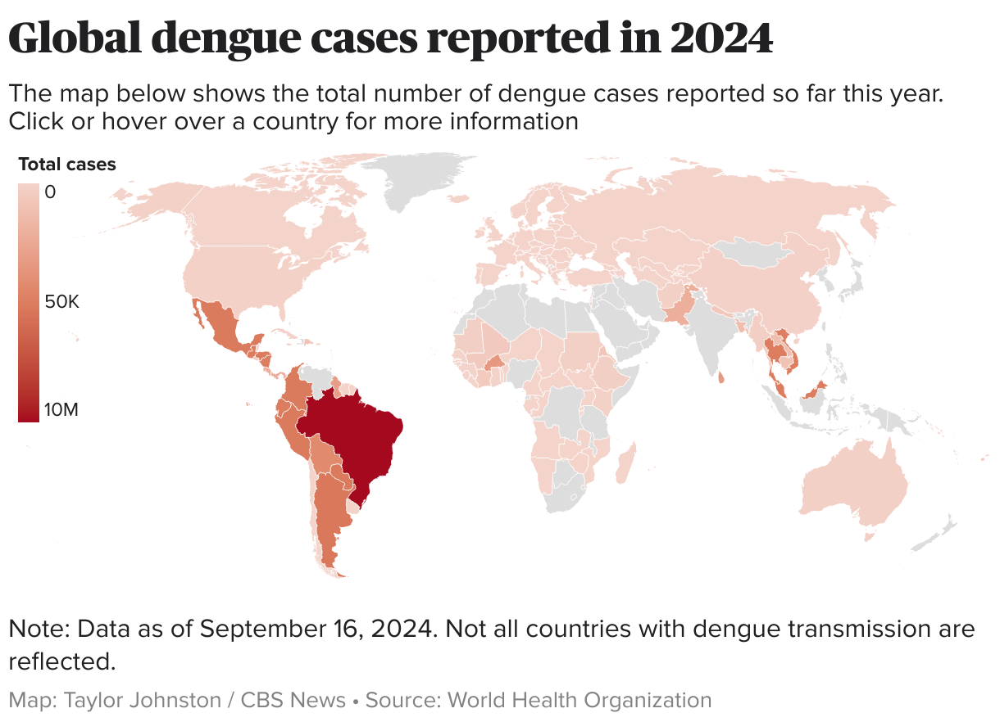
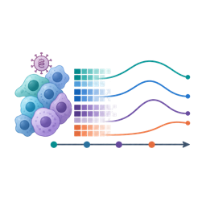
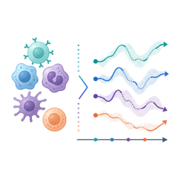
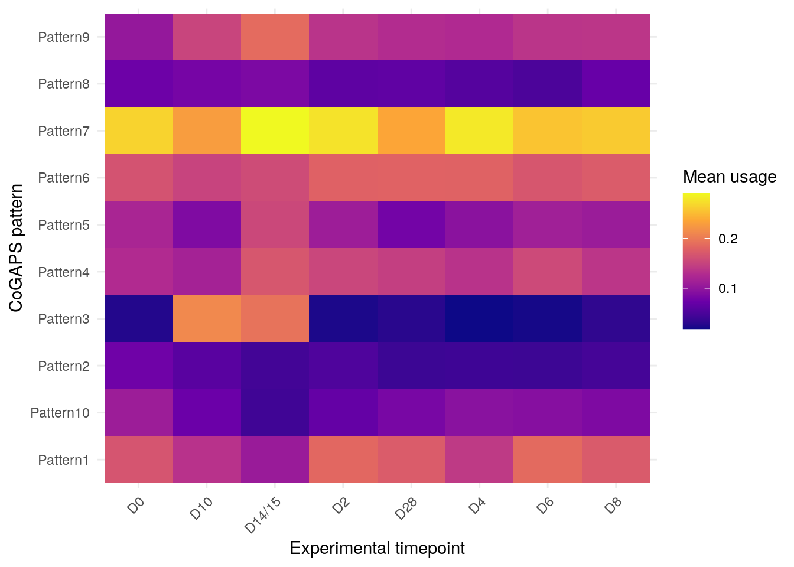
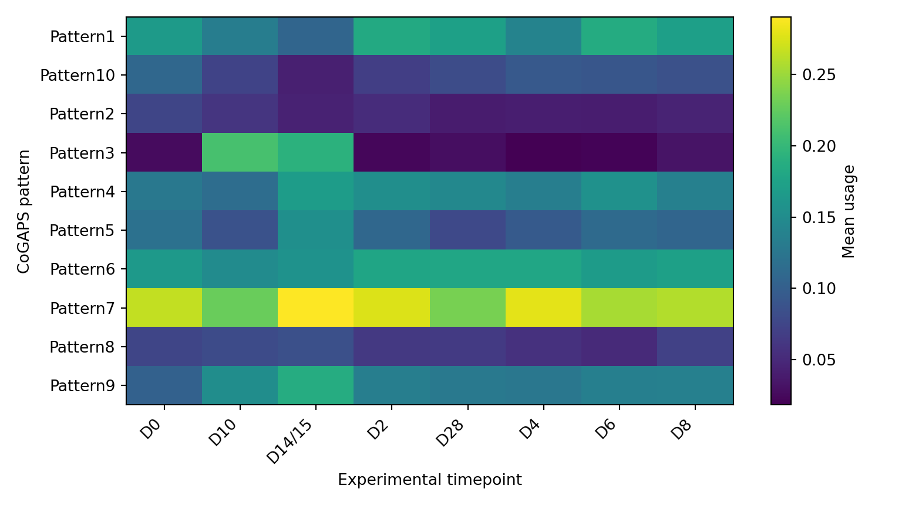
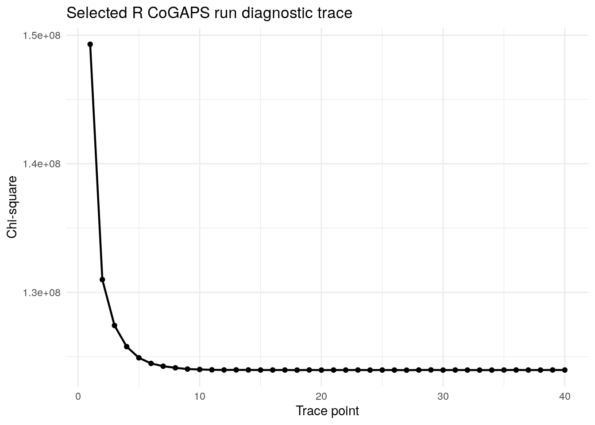
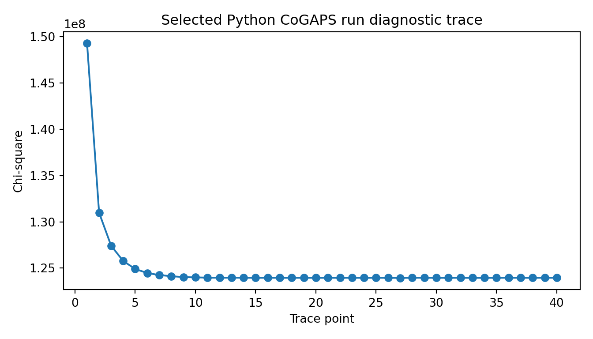
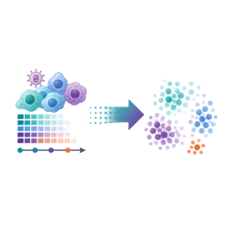

{kind=link}
library(here)
library(readr)
library(dplyr)
library(tidyr)
library(ggplot2)
library(knitr)
library(jsonlite)
if (requireNamespace("reticulate", quietly = TRUE) &&
file.exists("/opt/cogaps-venv/bin/python")) {
reticulate::use_python("/opt/cogaps-venv/bin/python", required = FALSE)
}Biomedical Open Case Studies: Discovering Temporal Immune Programs with CoGAPS in Single-Cell Dengue Infection Data
Temporal immune programs in experimental dengue infection
PBMC samples contain many immune-cell identities in the same expression matrix. During dengue infection, those stable identities can be layered with changing infection-response programs. In this case study, you will use CoGAPS to separate these two sources of variation: which patterns mostly describe immune-cell identity, and which patterns describe dynamic activity over time?
The source data come from Waickman et al. 2021 and GEO accession GSE154386. The experimental discovery subset follows three subjects across eight sampling days, where D means day: D0 (day 0), D2, D4, D6, D8, D10, D14/15, and D28. The late acute window is D10 to D14/15, or approximately day 10 to day 15.
The opening figure previews the selected K = 10 CoGAPS model. In CoGAPS, K is the number of latent patterns the model is asked to learn; here, K = 10 means the model represents the data using 10 patterns. You should not treat this opening figure as proof yet. Instead, use it as a map for the analysis path ahead. Later, you will examine the sweep results and diagnostics that motivated using K = 10 for the main analysis.
You will work backward from this preview to ask how the data were prepared, why K = 10 was selected, whether the model diagnostics support the run, which genes support the interferon interpretation, and whether those genes increase during the late acute window.
How to read the figure:
- Panel A summarizes the selected
K = 10model. Rows are CoGAPS patterns, columns are timepoints, and color shows the mean cell score for each pattern at each timepoint. Pattern labels are run-specific; they become meaningful only after inspecting trajectories and top genes. - Panel B focuses on the candidate interferon-associated pattern. Gray lines show subject-level means, the red line shows the subject mean and standard error, and the shaded region marks the late acute window.
As you move through the case study, return to this preview and ask three questions: which patterns vary over time, which patterns mostly reflect PBMC identity, and what evidence supports an interferon-associated infection-response program?
By the end, you will connect this figure to the main learning objectives: documenting the teaching subset, reading a model-selection summary, checking model diagnostics, and interpreting latent patterns biologically.
Key terms
- PBMCs: Peripheral blood mononuclear cells, a mixed population of immune cells isolated from blood. PBMCs include lymphocytes such as T cells, B cells, and natural killer cells, as well as monocytes and related antigen-presenting cells.
- PBMC identity: The relatively stable immune-cell identity of a cell, such as T cell, B cell, natural killer cell, or monocyte. A T cell remains a T cell across the infection time course, even though its gene-expression activity can change.
- IFN: Interferon, an antiviral signaling system that helps coordinate host responses to viral infection.
Disclaimer
The purpose of the Open Case Studies project is to demonstrate the use of various data science methods, tools, and software in the context of messy, real-world data. A given case study does not cover all aspects of the research process, is not claiming to be the most appropriate way to analyze a given data set, and should not be used in the context of making policy decisions or clinical decisions without external consultation from scientific experts. In addition, due to size constraints, datasets used within a case study may be a subset of the original/full dataset.
License information
This work is licensed under the Creative Commons Attribution-NonCommercial 4.0 (CC BY-NC 4.0) United States License unless otherwise noted.
This work is funded through the National Institutes of Health, specifically the National Institute of General Medical Sciences: Grant Number 1R25GM160622.
Data, Runtime, and Reproducibility
The GitHub repository contains the Quarto source, rendered site, scripts, and lightweight teaching artifacts needed to run the ordinary case-study path. Large raw, preprocessed, model-object, and checkpoint files are intentionally excluded from GitHub.
| Resource | Location | Purpose |
|---|---|---|
| Source single-cell data | GEO accession GSE154386 | Original public data source from Waickman et al. 2021. |
| Case-study source | opencasestudies/ocs-bio-temporal | Quarto source, lightweight teaching artifacts, scripts, and rendered GitHub Pages output. |
| Large reproduction artifacts | Zenodo draft; DOI pending publication | Optional full-reproduction files, including large H5AD inputs, model objects, checkpoints, and sweep summaries. |
| Runtime image | othomas2/cs5-cogaps-runtime:0.1.0 |
Docker image used for GitHub rendering, RStudio Server sessions, and optional local reproduction. |
To launch the runtime locally, clone the repository, open a terminal in the repository root, and run:
docker run --platform linux/amd64 --rm -it \
-p 8787:8787 \
-e PASSWORD="Password12" \
-v "$PWD":/home/rstudio/project:rw \
othomas2/cs5-cogaps-runtime:0.1.0Then open http://localhost:8787, sign in with username rstudio and password Password12, and copy code from the online case study into the RStudio Server session.
The standard case-study path uses precomputed artifacts so you can focus on interpretation, diagnostics, and reproducible analysis decisions. Full CoGAPS reruns are optional reproduction steps. In the four-thread Docker setup used for this draft, the selected K = 10 R and Python model runs each took about 24 minutes.
To cite this case study, please use:
Thomas, Oshane O. and Wright, Carrie and Isaacs, Kate. (2026). https://github.com/opencasestudies/ocs-bio-temporal. Discovering Temporal Immune Programs with CoGAPS in Single-Cell Dengue Infection Data (Version 0.1.0).
Motivation
Dengue is a mosquito-borne viral disease with a growing global footprint. In its 2024 global dengue update, the World Health Organization reported 14,434,584 dengue cases across all six WHO regions, the highest global burden recorded in WHO surveillance. Dengue risk is shaped by many overlapping factors, including mosquito-vector ecology, urbanization, travel, surveillance capacity, health-system capacity, and climate-sensitive mosquito habitats.

Image source: CBS News, “Maps show dengue fever risk areas as CDC warns of global case surge”.
For this case study, the public-health problem leads to a biological question: how does the immune system change over time during dengue infection?
Blood contains many peripheral blood mononuclear cell, or PBMC, populations at once, including T cells, B cells, natural killer cells, monocytes, and antigen-presenting cells. During infection, each cell still carries its immune-cell identity, but it may also activate antiviral, inflammatory, or recovery-associated transcriptional programs.
That creates the central puzzle. If cells from day 10 look different from cells at baseline, what changed? Did the sample contain different immune-cell populations? Did one subject contribute more strongly than another? Or did similar cell types activate a shared infection-response program over time?
Ordinary clustering is useful for finding groups of similar cells, but it is not always enough for this question. A cell does not have to be only “identity” or only “response.” A monocyte can remain a monocyte while also expressing an interferon-stimulated antiviral program. This case study therefore focuses on latent transcriptional programs: patterns of gene expression that can be shared across cells and vary over time.
The data come from Waickman et al. 2021, who profiled PBMCs from experimental and natural primary dengue virus type 1 infection. The natural infection samples are biologically important and appear later as optional extension material. The main analysis focuses on the experimental infection cohort because dengue-naive adults were sampled along an aligned time course, from baseline through early post-infection, late acute response, and recovery. In the source study, the experimental time course captures an early post-infection period, a day 10 late acute immune-response window, and later day 14/15 changes that may include adaptive or cytotoxic immune activity.
You will use CoGAPS to represent each cell as a non-negative mixture of latent transcriptional programs. The goal is not simply to find a pattern labeled “interferon.” The goal is to learn how to evaluate whether a program is temporal, whether it reflects stable immune-cell identity or dynamic infection activity, and whether the biological interpretation is supported by diagnostics, top genes, and directionality.
Model-rank selection is part of that scientific reasoning. Choosing K, the number of CoGAPS patterns, changes whether broad identity structure and dynamic infection programs are separated or compressed together. In this case study, you will inspect evidence for the selected K = 10 model while using K = 5 as a sensitivity comparison.
These ideas lead directly into the main research questions: which temporal immune programs appear in the experimental dengue time course, which patterns look more like stable PBMC identity versus dynamic infection activity, and which evidence supports an interferon-associated late acute response.
Main Questions
You will use the selected K = 10 CoGAPS model to answer three connected research questions about the experimental dengue infection time course. Each question is paired with the evidence you will inspect later in the case study.
| Research question | Evidence you will inspect | |
|---|---|---|
|
 |
Question 1 Which temporal immune programs appear across the experimental dengue time course? |
You will answer this by ranking CoGAPS patterns by temporal variation, then checking pattern-by-day summaries and subject-level trajectories. |
|
 |
Question 2 Which programs reflect PBMC identity, dynamic infection activity, or both? |
You will compare variation explained by broad immune-cell type with variation explained by infection day, then inspect top genes and pattern-use heatmaps. |
|
Question 3 Which program is most consistent with an interferon-associated late acute response? |
You will combine IFN-score correlation, interferon-stimulated top genes, day 10 and day 14/15 trajectories, and pseudobulk directionality relative to baseline. |
The selected K = 10 model is used for the main answers. The K = 5 model is kept as a sensitivity comparison because it shows how a lower-rank model can compress biologically distinct signals.
Use this evidence map as a guide as you move through the analysis:
| Question | Main evidence | Where it appears |
|---|---|---|
| Question 1: temporal programs | Pattern-by-day summaries, subject-level summaries, temporal effect sizes, and pattern trajectories | Data Analysis |
| Question 2: identity versus activity | Broad-cell-type effect sizes, timepoint effect sizes, top genes, and pattern heatmaps | Data Analysis |
| Question 3: IFN-associated response | IFN-score correlation, IFN-stimulated top genes, late acute trajectory, and pseudobulk directionality | Data Analysis |
Learning Objectives
By the end of this case study, you will be able to analyze longitudinal single-cell RNA-seq data from experimental dengue virus infection using CoGAPS, a Bayesian non-negative matrix factorization method.
You may work through the analysis in R or Python. The case study uses precomputed teaching artifacts for the required path, so the focus is on importing, summarizing, visualizing, and interpreting the selected model rather than waiting for a full CoGAPS run. If you want to reproduce the full model run, you can download the large reproduction files from the Zenodo record and run the provided scripts inside the case-study Docker image.
The objectives are organized into data science/bioinformatics, statistical/modeling, and biological/topical goals.
Data Science/Bioinformatics Learning Objectives:
- Import selected-model CoGAPS artifacts, metadata tables, diagnostics, and manifest files in R or Python.
- Summarize cell-level pattern scores, gene-level loadings, and run diagnostics as tidy analysis tables.
- Join CoGAPS cell scores to subject, timepoint, and broad immune-cell-type annotations.
- Create reproducible summaries and visualizations from lightweight teaching artifacts that can be rendered from GitHub.
- Explain which artifacts belong in the GitHub repository and which large reproduction files belong in an external data archive.
Statistical and Modeling Learning Objectives:
- Interpret CoGAPS as two linked non-negative matrices: gene weights and cell pattern scores.
- Evaluate rank selection using stability, redundancy, temporal signal, interpretability, and biological plausibility rather than a single metric.
- Justify why the selected
K = 10model is used for the main analysis whileK = 5is retained as a sensitivity comparison. - Read convergence and stability diagnostics such as chi-square traces, atom traces, snapshot counts, runtime, and total-update summaries.
- Distinguish a high non-negative pattern score from gene-expression direction.
- Use pseudobulk directionality analysis to evaluate whether top pattern genes increase or decrease relative to baseline.
Biological/Topical Learning Objectives:
- Describe the experimental and natural DENV-1 PBMC cohorts in Waickman et al. 2021 and explain why the experimental cohort is the primary discovery set.
- Recognize the difference between immune-cell identity programs and infection-response activity programs in single-cell PBMC data.
- Interpret temporal immune programs using top genes, time-course behavior, broad cell-type context, and subject-level summaries.
- Identify evidence for an interferon-stimulated antiviral transcriptional program using top genes, pathway knowledge, time-course behavior, and directionality evidence.
- Evaluate whether later time-course patterns may be consistent with adaptive, cytotoxic, or plasmablast-related immune activity without treating those labels as guaranteed findings.
- Explain why this analysis is a host-response analysis rather than a direct infected-cell atlas.
- Discuss limitations created by small subject numbers, changing cell composition, teaching-subset construction, and model-rank sensitivity.
Objectives Map
| Objective area | You will practice this by… | Main section |
|---|---|---|
| Data import and artifacts | Importing selected-model tables, diagnostics, and manifest files in R or Python | Data Import |
| Pattern summaries | Joining cell scores to metadata and summarizing patterns by timepoint, subject, and broad cell type | Data Wrangling and Preprocessing |
| Rank selection | Evaluating why K = 10 is used for the main model while K = 5 remains a sensitivity comparison |
Data Visualization; Data Analysis |
| Diagnostics | Reading convergence, stability, runtime, and trace summaries before interpreting model output | Data Analysis |
| Temporal biology | Interpreting which programs vary over the dengue time course and which appear identity-like, activity-like, or mixed | Data Analysis |
| IFN evidence | Combining top genes, IFN-score correlation, trajectory, and directionality evidence for the late acute response | Data Analysis |
| Limitations and extensions | Distinguishing confirmed results, sensitivity comparisons, and optional natural-cohort projection plans | Summary; Suggested Homework or Further Exploration |
We will begin by loading the packages used for the rendered analysis. The full runtime image also contains R CoGAPS, PyCoGAPS, Scanpy, AnnData, and supporting single-cell packages for optional reproduction runs.
from pathlib import Path
import json
import pandas as pd
import matplotlib.pyplot as plt| Package | Use |
|---|---|
here |
Build project-relative paths in R. |
readr |
Read CSV tables used in the rendered R code. |
dplyr |
Select, filter, summarize, and arrange R analysis tables. |
tidyr |
Reshape pattern summaries into long and wide forms in R. |
ggplot2 |
Build and customize R visualizations from tidy tables. |
knitr |
Render R tables in the case-study document. |
jsonlite |
Read run manifests and diagnostic JSON files in R. |
pandas |
Read, filter, and summarize CSV tables in Python. |
matplotlib |
Build Python visualizations. |
CoGAPS |
Optional R implementation of CoGAPS for full model reproduction. |
PyCoGAPS |
Optional Python implementation of CoGAPS for the alternate workflow. |
scanpy and anndata |
Optional Python single-cell preprocessing and H5AD handling. |
The first time we use a function in prose-heavy sections, we use the package::function() form to show where important functions come from.
Context and Background
Dengue Infection and PBMC Host Response
Dengue virus infection induces a systemic immune response that can involve interferon-stimulated genes, inflammatory monocyte programs, activated lymphocytes, and later antibody-producing cell states. In PBMC single-cell data, those responses appear on top of cell identity. A monocyte remains a monocyte while also becoming antiviral or inflammatory; a lymphocyte can retain lineage markers while gaining an activation state.
The Waickman et al. study is useful for teaching because it includes both a controlled experimental infection cohort and a natural infection comparison cohort. The experimental cohort provides an aligned time axis, making it the primary discovery dataset for temporal analysis. The natural cohort is biologically valuable, but the timepoints are less directly aligned, so it is better treated as a transfer-learning extension.
Why CoGAPS?
CoGAPS is a Bayesian non-negative matrix factorization method. Given an expression matrix, CoGAPS estimates:
- a gene-by-pattern matrix, often called
A, that shows which genes load strongly on each pattern - a pattern-by-cell matrix, often called
P, that shows how strongly each pattern is used in each cell
Because the factors are non-negative, a cell can combine several programs at once. This is exactly what we want for a PBMC time course: immune identity and infection activity are not mutually exclusive.
A Note About Pattern Numbers
Pattern numbers are labels assigned by a model run. The biological interpretation is not the number itself. In the selected R and Python K = 10 runs used here, the strongest interferon-associated activity program is Pattern3. In the broader K-selection sweep, an equivalent representative IFN-like program appeared with a different label in one sweep table. This is normal for matrix factorization. The case study therefore emphasizes pattern annotations, top genes, and trajectories rather than treating pattern numbers as universal names.
What Are the Data?
The source data come from GEO accession GSE154386, associated with Waickman et al. 2021. The study profiled unfractionated PBMCs using a 10x Genomics 5-prime single-cell RNA-seq workflow.
For this case study, the important design distinction is:
- Experimental infection cohort: three dengue-naive adults sampled at aligned study days
D0,D2,D4,D6,D8,D10,D14/15, andD28. This is the primary discovery cohort. - Natural infection cohort: two subjects sampled during natural primary infection plus a convalescent reference. This cohort is reserved for optional projection material.
The full raw and preprocessed files are too large for a lightweight GitHub-rendered case study. The repository therefore includes only small teaching artifacts derived from the analysis.
manifest <- jsonlite::fromJSON(here::here("data", "artifact_manifest.json"))
data.frame(
artifact_group = c("GitHub-tracked teaching files", "External or local-only files"),
file_count = c(nrow(manifest$copied), nrow(manifest$skipped)),
size_mb = c(
round(sum(manifest$copied$size_bytes) / 1024^2, 2),
round(sum(manifest$skipped$size_bytes) / 1024^2, 2)
)
) |>
knitr::kable()| artifact_group | file_count | size_mb |
|---|---|---|
| GitHub-tracked teaching files | 141 | 29.20 |
| External or local-only files | 8 | 316.32 |
import json
import pandas as pd
with open("data/artifact_manifest.json") as f:
manifest_py = json.load(f)
pd.DataFrame({
"artifact_group": [
"GitHub-tracked teaching files",
"External or local-only files",
],
"file_count": [
len(manifest_py["copied"]),
len(manifest_py["skipped"]),
],
"size_mb": [
round(sum(x["size_bytes"] for x in manifest_py["copied"]) / 1024**2, 2),
round(sum(x["size_bytes"] for x in manifest_py["skipped"]) / 1024**2, 2),
],
}) artifact_group file_count size_mb
0 GitHub-tracked teaching files 141 29.20
1 External or local-only files 8 316.32The tracked teaching files include R and Python selected-model outputs, K-selection tables, directionality summaries, R/Python agreement summaries, and case-study figures. The skipped files include large H5ADs, RDS model objects, and checkpoint files. Those are documented in data/artifact_manifest.json.
Discovery Set
The core CoGAPS analysis uses a balanced experimental discovery set rather than the entire published single-cell atlas. The discovery set has 4,800 cells and 5,000 highly variable genes. Cells are balanced across experimental samples so that the model is not dominated by a single high-yield sample.
composition <- readr::read_csv(
here::here("data", "processed", "figures", "source_tables",
"figure_02_discovery_set_composition_source.csv"),
show_col_types = FALSE
)
composition |>
group_by(timepoint_merged) |>
summarize(n_cells = sum(n_cells), .groups = "drop") |>
knitr::kable()| timepoint_merged | n_cells |
|---|---|
| D0 | 600 |
| D10 | 600 |
| D14/15 | 600 |
| D2 | 600 |
| D28 | 600 |
| D4 | 600 |
| D6 | 600 |
| D8 | 600 |
composition_py = pd.read_csv(
"data/processed/figures/source_tables/"
"figure_02_discovery_set_composition_source.csv"
)
composition_py.groupby("timepoint_merged", as_index=False)["n_cells"].sum() timepoint_merged n_cells
0 D0 600
1 D10 600
2 D14/15 600
3 D2 600
4 D28 600
5 D4 600
6 D6 600
7 D8 600Limitations
This case study is designed for teaching. The results are useful for learning how to reason about latent factors in single-cell data, but several limitations matter.
- Small experimental cohort: the primary time course has three experimental subjects. Subject-level summaries are essential, but they do not replace a larger cohort.
- Teaching subset: the CoGAPS discovery set is balanced and tractable for learner-facing analysis. It is not the full published atlas.
- Model-rank sensitivity:
K = 5is highly stable and compact, but it compresses temporal activity into broader patterns.K = 10better matches the case-study goal by resolving an IFN-associated activity program while remaining on the stability plateau. - Pattern labels are run-specific: learners should interpret pattern biology from genes, time course, cell type usage, and diagnostics rather than from pattern numbers alone.
- CoGAPS is non-negative: a high pattern score does not tell us whether genes are upregulated or downregulated relative to baseline. Directionality requires a separate comparison.
- Natural projection is optional: projection into the natural infection cohort is biologically motivated, but it should remain an optional extension until the final
K = 10projection workflow is regenerated and validated. - Host response, not viral tropism: the source study reported no cell-associated DENV-1 RNA in PBMCs. This analysis concerns host immune programs, not direct identification of infected cells.
Bioethics, Data Use, and Interpretation Cautions
This case study uses publicly available human single-cell RNA-seq data from GEO. Learners should still treat the data as human-subjects-derived research data and interpret results with care.
Important cautions:
- The case study should not be used to make clinical decisions or policy claims.
- The discovery set is a teaching subset and does not capture all possible variation in the full study.
- Patterns are latent statistical summaries, not direct measurements of immune pathways.
- A pattern annotated as interferon-associated is supported by top genes, correlation with an IFN score, timing, and directionality, but it is still an interpretation.
- Subject-level variation should be shown whenever possible so that learners do not confuse large numbers of cells with large numbers of independent people.
- Public data reuse should cite the original study, the GEO accession, and any software used in the analysis.
Data Import
The rendered case study imports small CSV and JSON artifacts that are already stored in the repository. This keeps the standard case-study path fast and reproducible.
The large inputs needed to rerun CoGAPS from scratch are intentionally external:
- raw GEO download:
GSE154386_RAW.tar - preprocessed H5AD cache
- experimental discovery H5ADs
- RDS model objects
- checkpoint files
These files are documented in data/artifact_manifest.json and will be linked through an external host when the publication data-hosting decision is finalized.
Import the Selected-Model Results
r_selected_dir <- here::here(
"data", "processed", "selected_model_k10", "r"
)
r_rq1 <- readr::read_csv(
file.path(r_selected_dir, "RQ1_time_varying_patterns.csv"),
show_col_types = FALSE
)
r_top_genes <- readr::read_csv(
file.path(r_selected_dir, "cogaps_K10_seed2_iter2000.top_genes.csv"),
show_col_types = FALSE
)
r_rq1 |>
select(pattern, eta_timepoint, peak_timepoint,
spearman_ifn_score_rho, candidate_ifn_pattern) |>
arrange(desc(eta_timepoint)) |>
head(5) |>
knitr::kable(digits = 3)| pattern | eta_timepoint | peak_timepoint | spearman_ifn_score_rho | candidate_ifn_pattern |
|---|---|---|---|---|
| Pattern3 | 0.454 | D10 | 0.756 | TRUE |
| Pattern5 | 0.021 | D14/15 | -0.012 | FALSE |
| Pattern1 | 0.019 | D6 | -0.074 | FALSE |
| Pattern4 | 0.010 | D14/15 | -0.088 | FALSE |
| Pattern10 | 0.009 | D0 | -0.175 | FALSE |
from pathlib import Path
import pandas as pd
py_selected_dir = Path("data/processed/selected_model_k10/python")
py_rq1 = pd.read_csv(py_selected_dir / "RQ1_time_varying_patterns.csv")
py_top_genes = pd.read_csv(
py_selected_dir / "cogaps_K10_seed2_iter2000.top_genes.csv"
)
py_rq1.loc[
:, ["pattern", "eta_timepoint", "peak_timepoint",
"spearman_ifn_score_rho", "candidate_ifn_pattern"]
].sort_values("eta_timepoint", ascending=False).head(5) pattern eta_timepoint ... spearman_ifn_score_rho candidate_ifn_pattern
0 Pattern3 0.454036 ... 0.756007 True
1 Pattern5 0.020907 ... -0.011738 False
2 Pattern1 0.019500 ... -0.074088 False
3 Pattern4 0.009813 ... -0.087754 False
4 Pattern10 0.009410 ... -0.174734 False
[5 rows x 5 columns]The R and Python selected-model artifacts match exactly for the final K = 10, seed = 2, nIterations = 2000 run. We still show both pathways because learners may work in either language.
The raw GEO download and full study-subset preparation workflow are covered in the Data Wrangling and Preprocessing section. That placement is intentional: the full workflow is provenance and preprocessing code, not ordinary data import code for the standard case-study path.
Data Exploration
Before fitting or interpreting CoGAPS, we need to understand what is in the teaching discovery set.
Experimental Discovery Set Composition
The discovery set is balanced by experimental sample and then summarized by broad immune-cell type.
{kind=link}
composition |>
group_by(broad_cell_type) |>
summarize(
n_cells = sum(n_cells),
mean_fraction = mean(fraction),
.groups = "drop"
) |>
arrange(desc(n_cells)) |>
knitr::kable(digits = 3)| broad_cell_type | n_cells | mean_fraction |
|---|---|---|
| T_cell | 2669 | 0.556 |
| NK_cell | 888 | 0.185 |
| Monocyte | 723 | 0.151 |
| B_cell | 420 | 0.088 |
| Neutrophil | 67 | 0.014 |
| Plasmablast | 33 | 0.007 |
(
composition_py
.groupby("broad_cell_type", as_index=False)
.agg(n_cells=("n_cells", "sum"), mean_fraction=("fraction", "mean"))
.sort_values("n_cells", ascending=False)
) broad_cell_type n_cells mean_fraction
5 T_cell 2669 0.556042
2 NK_cell 888 0.185000
1 Monocyte 723 0.150625
0 B_cell 420 0.087500
3 Neutrophil 67 0.013958
4 Plasmablast 33 0.006875This table helps learners see why pattern interpretation must consider cell type. A temporal pattern can reflect changing cell composition, changing expression within a cell type, or both.
What Does a CoGAPS Pattern Contain?
Each pattern has two linked views:
- Gene loadings: which genes define the pattern.
- Cell scores: which cells use the pattern.
r_top_genes |>
filter(pattern == "Pattern3") |>
arrange(rank) |>
select(pattern, rank, gene, weight) |>
head(15) |>
knitr::kable(digits = 3)| pattern | rank | gene | weight |
|---|---|---|---|
| Pattern3 | 1 | LY6E | 6.662 |
| Pattern3 | 2 | ISG15 | 5.737 |
| Pattern3 | 3 | IFITM1 | 5.703 |
| Pattern3 | 4 | IFITM2 | 5.496 |
| Pattern3 | 5 | IFI6 | 5.175 |
| Pattern3 | 6 | IFITM3 | 4.665 |
| Pattern3 | 7 | MX1 | 3.095 |
| Pattern3 | 8 | PSME2 | 3.094 |
| Pattern3 | 9 | IRF7 | 2.814 |
| Pattern3 | 10 | XAF1 | 2.801 |
| Pattern3 | 11 | HLA-A | 2.524 |
| Pattern3 | 12 | MT2A | 2.509 |
| Pattern3 | 13 | B2M | 2.506 |
| Pattern3 | 14 | MYL12A | 2.492 |
| Pattern3 | 15 | IFI44L | 2.341 |
py_top_genes.loc[
py_top_genes["pattern"].eq("Pattern3"),
["pattern", "rank", "gene", "weight"]
].sort_values("rank").head(15) pattern rank gene weight
100 Pattern3 1 LY6E 6.661504
101 Pattern3 2 ISG15 5.737454
102 Pattern3 3 IFITM1 5.703413
103 Pattern3 4 IFITM2 5.495784
104 Pattern3 5 IFI6 5.175118
105 Pattern3 6 IFITM3 4.664856
106 Pattern3 7 MX1 3.095242
107 Pattern3 8 PSME2 3.094292
108 Pattern3 9 IRF7 2.813869
109 Pattern3 10 XAF1 2.800892
110 Pattern3 11 HLA-A 2.523638
111 Pattern3 12 MT2A 2.509067
112 Pattern3 13 B2M 2.506493
113 Pattern3 14 MYL12A 2.491588
114 Pattern3 15 IFI44L 2.341065The top genes for Pattern3 include LY6E, ISG15, IFITM1, IFI6, MX1, IRF7, IFI44L, IFIT3, and OAS1, which supports the interferon-associated interpretation.
Data Wrangling and Preprocessing
The full preprocessing workflow starts from GEO 10x files, constructs an AnnData object, performs QC, normalizes counts, selects highly variable genes, annotates broad cell types, and builds a balanced experimental discovery set. That workflow is intentionally treated as full reproduction material rather than a required rendered-case-study step.
The required wrangling task is to convert model artifacts into tidy tables for interpretation.
Optional Full Preprocessing Workflow: From GEO to Discovery Subset
The code in this subsection is shown for transparency and reproducibility. It is not run during the rendered case study because it downloads and processes large files. Instead, the standard case-study path starts from the small precomputed artifacts imported earlier.
This full preparation workflow starts from the GEO raw 10x files and ends with the large local objects used for CoGAPS:
- download and extract the GSE154386 raw archive
- discover per-sample 10x matrix/barcode/feature files
- parse sample metadata from GEO file names
- build a combined single-cell object
- perform QC, normalization, gene filtering, and HVG selection
- score broad immune-cell marker sets and biology programs
- annotate broad immune-cell types for teaching summaries
- build the balanced experimental discovery subset
- create a natural-cohort projection target for the optional extension
This script intentionally stops before running CoGAPS. The selected CoGAPS model is covered in the analysis section.
Learners do not need to run this code to complete the case study. Instead, use it as an audit trail for the teaching dataset.
data.frame(
thing_to_inspect = c(
"QC thresholds",
"Timepoint handling",
"Gene selection",
"Marker and program scoring",
"Discovery-set balancing",
"Experimental versus natural cohorts",
"Large-file outputs"
),
guiding_question = c(
"Which cells and genes are removed before modeling?",
"Why are experimental D14 and D15 merged into D14/15?",
"Why does the workflow select 5,000 highly variable genes?",
"Which marker sets support broad cell-type and IFN-program interpretation?",
"Why are experimental samples capped at 600 cells per sample?",
"Which cohort is used for discovery, and which is reserved for optional projection?",
"Which outputs are too large for GitHub and need an external host?"
)
) |>
knitr::kable()| thing_to_inspect | guiding_question |
|---|---|
| QC thresholds | Which cells and genes are removed before modeling? |
| Timepoint handling | Why are experimental D14 and D15 merged into D14/15? |
| Gene selection | Why does the workflow select 5,000 highly variable genes? |
| Marker and program scoring | Which marker sets support broad cell-type and IFN-program interpretation? |
| Discovery-set balancing | Why are experimental samples capped at 600 cells per sample? |
| Experimental versus natural cohorts | Which cohort is used for discovery, and which is reserved for optional projection? |
| Large-file outputs | Which outputs are too large for GitHub and need an external host? |
Run this from the repository root inside the case-study Docker image after the large data host is finalized, or locally in an equivalent Python environment:
python scripts/prepare_gse154386_subset_python.py \
--workdir data/external/GSE154386 \
--max-cells-per-sample 600 \
--n-hvgs 5000 \
--seed 42Complete Python preparation script
#!/usr/bin/env python3
"""Download, preprocess, and subset GSE154386 for Case Study 5.
This is an optional full-reproduction script. It prepares the large local
objects used before CoGAPS is run, but it does not run CoGAPS.
"""
from __future__ import annotations
import argparse
import gzip
import json
import re
import tarfile
from pathlib import Path
from typing import Dict, List, Optional, Tuple
import anndata as ad
import numpy as np
import pandas as pd
import requests
import scanpy as sc
from anndata import AnnData
from scipy import sparse
from scipy.io import mmread
RAW_TAR_URL = "https://www.ncbi.nlm.nih.gov/geo/download/?acc=GSE154386&format=file"
RANDOM_SEED = 42
MIN_GENES = 200
MIN_COUNTS = 500
MAX_PCT_MT = 20.0
MIN_CELLS_PER_GENE = 10
N_HVGS = 5000
DISCOVERY_MAX_CELLS_PER_SAMPLE = 600
BROAD_MARKERS = {
"Monocyte": ["LST1", "FCN1", "CTSS", "SAT1", "TYMP", "S100A8", "S100A9"],
"T_cell": ["CD3D", "CD3E", "TRAC", "LTB", "IL7R", "MALAT1"],
"NK_cell": ["NKG7", "GNLY", "PRF1", "CTSW", "KLRD1", "TYROBP"],
"B_cell": ["MS4A1", "CD79A", "CD79B", "CD74", "HLA-DRA", "BANK1"],
"Plasmablast": ["MZB1", "JCHAIN", "XBP1", "SDC1", "IGHG1", "IGKC"],
"Dendritic": ["FCER1A", "CST3", "CLEC10A", "CD1C", "HLA-DRA"],
"Neutrophil": ["FCGR3B", "CXCR2", "CSF3R", "MNDA", "S100A8", "S100A9"],
}
PROGRAMS = {
"ifn_program": [
"IFITM1", "IFI6", "ISG15", "MX1", "IFIT1", "IFIT3",
"IFI44L", "ISG20", "LY6E", "TRIM22", "OAS1", "OASL",
],
"plasmablast_program": ["MZB1", "JCHAIN", "XBP1", "SDC1", "IGHG1", "IGKC"],
"translation_program": ["RPL4", "RPL5", "RPL6", "RPS3", "RPS8", "EEF2"],
"mito_program": ["MT-CYB", "MT-ND4", "MT-ND1", "MT-CO1", "MT-CO2"],
}
def download(url: str, dest: Path, chunk_mb: int = 16) -> None:
if dest.exists() and dest.stat().st_size > 0:
print(f"[skip] {dest} already exists")
return
print(f"[download] {url} -> {dest}")
tmp = dest.with_suffix(dest.suffix + ".part")
with requests.get(url, stream=True, timeout=180) as response:
response.raise_for_status()
with open(tmp, "wb") as handle:
for chunk in response.iter_content(chunk_size=chunk_mb * 1024 * 1024):
if chunk:
handle.write(chunk)
tmp.rename(dest)
def safe_extract_tar(tar_path: Path, out_dir: Path) -> None:
if any(out_dir.iterdir()):
print(f"[skip] {out_dir} already has extracted files")
return
print(f"[extract] {tar_path} -> {out_dir}")
out_dir_resolved = out_dir.resolve()
with tarfile.open(tar_path, "r") as tf:
for member in tf.getmembers():
target = (out_dir / member.name).resolve()
if not str(target).startswith(str(out_dir_resolved)):
raise RuntimeError(f"Unsafe tar member path: {member.name}")
tf.extractall(out_dir)
def parse_sample_key(sample_key: str) -> Dict[str, object]:
match = re.match(r"^(GSM\d+)_([^_]+)_(D(?:neg)?\d+)$", sample_key)
if not match:
raise ValueError(f"Could not parse sample key: {sample_key}")
gsm_id, subject, tp = match.groups()
cohort = "experimental" if subject.startswith("Subject") else "natural"
day = -int(tp.replace("Dneg", "")) if tp.startswith("Dneg") else int(tp.replace("D", ""))
return {
"gsm_id": gsm_id,
"sample_key": sample_key,
"sample_id": gsm_id,
"subject": subject,
"cohort": cohort,
"timepoint_raw": tp,
"timepoint_display": f"D{day}",
"day_numeric": day,
"is_reference": (cohort == "experimental" and day == 0)
or (cohort == "natural" and day == 180),
}
def add_merged_timepoints(adata: AnnData) -> None:
labels: List[str] = []
days: List[float] = []
for cohort, day, display in zip(
adata.obs["cohort"].astype(str),
adata.obs["day_numeric"].astype(float),
adata.obs["timepoint_display"].astype(str),
):
if cohort == "experimental" and day in (14.0, 15.0):
labels.append("D14/15")
days.append(14.5)
else:
labels.append(display)
days.append(float(day))
adata.obs["timepoint_merged"] = labels
adata.obs["day_merged_numeric"] = days
def strip_known_suffix(fname: str) -> Tuple[str, Optional[str]]:
suffix_map = {
"_matrix.mtx.gz": "matrix",
"_matrix.mtx": "matrix",
"_barcodes.tsv.gz": "barcodes",
"_barcodes.tsv": "barcodes",
"_features.tsv.gz": "features",
"_features.tsv": "features",
"_genes.tsv.gz": "genes",
"_genes.tsv": "genes",
}
for suffix, role in suffix_map.items():
if fname.endswith(suffix):
return fname[: -len(suffix)], role
return fname, None
def discover_10x_triplets(root: Path) -> List[Dict[str, Path]]:
grouped: Dict[str, Dict[str, Path]] = {}
for path in root.rglob("*"):
if not path.is_file():
continue
key, role = strip_known_suffix(path.name)
if role is None:
continue
grouped.setdefault(key, {})[role] = path
triplets: List[Dict[str, Path]] = []
for key, files in sorted(grouped.items()):
if "matrix" in files and "barcodes" in files and ("features" in files or "genes" in files):
entry = {"sample_key": key, **files}
triplets.append(entry)
return triplets
def read_text_table(path: Path) -> pd.DataFrame:
opener = gzip.open if path.suffix == ".gz" else open
with opener(path, "rt") as handle:
return pd.read_csv(handle, sep="\t", header=None)
def read_mtx(path: Path) -> sparse.csr_matrix:
opener = gzip.open if path.suffix == ".gz" else open
with opener(path, "rb") as handle:
return sparse.csr_matrix(mmread(handle))
def build_anndata_from_triplet(triplet: Dict[str, Path]) -> AnnData:
sample_key = str(triplet["sample_key"])
meta = parse_sample_key(sample_key)
matrix = read_mtx(Path(triplet["matrix"])) # features x cells
barcodes = read_text_table(Path(triplet["barcodes"])).iloc[:, 0].astype(str).tolist()
feature_path = Path(triplet.get("features", triplet.get("genes")))
features = read_text_table(feature_path)
gene_ids = features.iloc[:, 0].astype(str).tolist()
gene_symbols = features.iloc[:, 1].astype(str).tolist() if features.shape[1] > 1 else gene_ids
feature_types = (
features.iloc[:, 2].astype(str).tolist()
if features.shape[1] > 2
else ["Gene Expression"] * len(gene_symbols)
)
keep = np.array([x == "Gene Expression" for x in feature_types])
if keep.sum() == 0:
keep = np.ones(len(gene_symbols), dtype=bool)
matrix = matrix[keep, :]
gene_ids = [g for g, k in zip(gene_ids, keep) if k]
gene_symbols = [g for g, k in zip(gene_symbols, keep) if k]
adata = AnnData(X=matrix.T.tocsr()) # cells x genes
adata.obs_names = [f"{meta['sample_id']}:{barcode}" for barcode in barcodes]
adata.var_names = pd.Index(gene_symbols)
adata.var_names_make_unique()
adata.var["gene_id"] = gene_ids
adata.var["gene_symbol"] = gene_symbols
adata.obs["barcode"] = barcodes
for key, value in meta.items():
adata.obs[key] = value
adata.layers["counts"] = adata.X.copy()
return adata
def flag_upper_outliers_by_sample(adata: AnnData, column: str, q: float = 99.5) -> pd.Series:
flags = pd.Series(False, index=adata.obs_names)
for _, idx in adata.obs.groupby("sample_id", observed=True).groups.items():
vals = adata.obs.loc[idx, column].astype(float).to_numpy()
if len(vals) >= 10:
threshold = float(np.nanpercentile(vals, q))
flags.loc[idx] = adata.obs.loc[idx, column] > threshold
return flags
def score_gene_sets(adata: AnnData, gene_sets: Dict[str, List[str]]) -> None:
for label, genes in gene_sets.items():
present = [gene for gene in genes if gene in adata.var_names]
if len(present) >= 2:
sc.tl.score_genes(adata, present, score_name=f"{label}_score", use_raw=False)
def annotate_broad_cell_types(adata: AnnData, cluster_key: str = "leiden") -> pd.DataFrame:
score_cols = [f"{label}_score" for label in BROAD_MARKERS if f"{label}_score" in adata.obs]
cluster_means = adata.obs.groupby(cluster_key, observed=True)[score_cols].mean()
best = cluster_means.idxmax(axis=1).str.replace("_score", "", regex=False)
adata.obs["broad_cell_type"] = adata.obs[cluster_key].map(best.to_dict()).astype("category")
out = cluster_means.copy()
out["assigned_label"] = best
return out.reset_index()
def balanced_sample_by_group(
adata: AnnData,
groupby: str = "sample_id",
max_cells_per_group: Optional[int] = DISCOVERY_MAX_CELLS_PER_SAMPLE,
seed: int = RANDOM_SEED,
) -> AnnData:
if max_cells_per_group is None:
return adata.copy()
rng = np.random.default_rng(seed)
keep: List[str] = []
for _, idx in adata.obs.groupby(groupby, observed=True).groups.items():
idx_list = list(idx)
if len(idx_list) <= max_cells_per_group:
keep.extend(idx_list)
else:
keep.extend(rng.choice(idx_list, max_cells_per_group, replace=False).tolist())
return adata[keep].copy()
def make_cogaps_ready(adata: AnnData) -> AnnData:
out = adata.copy()
x = out.X.toarray() if sparse.issparse(out.X) else np.asarray(out.X)
x = np.nan_to_num(x.astype(np.float32), nan=0.0, posinf=0.0, neginf=0.0)
x[x < 0] = 0.0
out.X = x
return out
def write_manifest(out_path: Path, payload: Dict[str, object]) -> None:
out_path.write_text(json.dumps(payload, indent=2), encoding="utf-8")
def main() -> None:
parser = argparse.ArgumentParser(description=__doc__)
parser.add_argument("--workdir", type=Path, default=Path("data/external/GSE154386"))
parser.add_argument("--max-cells-per-sample", type=int, default=DISCOVERY_MAX_CELLS_PER_SAMPLE)
parser.add_argument("--n-hvgs", type=int, default=N_HVGS)
parser.add_argument("--seed", type=int, default=RANDOM_SEED)
args = parser.parse_args()
workdir = args.workdir
raw_tar = workdir / "GSE154386_RAW.tar"
extract_dir = workdir / "extracted"
results_dir = workdir / "results"
for path in [workdir, extract_dir, results_dir]:
path.mkdir(parents=True, exist_ok=True)
download(RAW_TAR_URL, raw_tar)
safe_extract_tar(raw_tar, extract_dir)
triplets = discover_10x_triplets(extract_dir)
if not triplets:
raise RuntimeError(f"No 10x matrix triplets found under {extract_dir}")
adatas = [build_anndata_from_triplet(triplet) for triplet in triplets]
adata_all = sc.concat(
adatas,
join="outer",
label="batch",
keys=[a.obs["sample_id"].iloc[0] for a in adatas],
fill_value=0,
index_unique=None,
)
adata_all.layers["counts"] = adata_all.X.copy()
add_merged_timepoints(adata_all)
adata_all.var["mt"] = adata_all.var_names.str.upper().str.startswith("MT-")
adata_all.var["ribo"] = adata_all.var_names.str.upper().str.startswith(("RPS", "RPL"))
adata_all.var["hb"] = adata_all.var_names.str.upper().isin(
["HBA1", "HBA2", "HBB", "HBD", "HBE1", "HBG1", "HBG2", "HBM", "HBQ1", "HBZ"]
)
sc.pp.calculate_qc_metrics(adata_all, qc_vars=["mt", "ribo", "hb"], log1p=False, inplace=True)
adata_all.obs["high_genes_outlier"] = flag_upper_outliers_by_sample(adata_all, "n_genes_by_counts")
adata_all.obs["high_counts_outlier"] = flag_upper_outliers_by_sample(adata_all, "total_counts")
keep_cells = (
(adata_all.obs["n_genes_by_counts"] >= MIN_GENES)
& (adata_all.obs["total_counts"] >= MIN_COUNTS)
& (adata_all.obs["pct_counts_mt"] <= MAX_PCT_MT)
& (~adata_all.obs["high_genes_outlier"])
& (~adata_all.obs["high_counts_outlier"])
)
adata_qc = adata_all[keep_cells].copy()
sc.pp.filter_genes(adata_qc, min_cells=MIN_CELLS_PER_GENE)
adata_qc.layers["counts"] = adata_qc.X.copy()
sc.pp.normalize_total(adata_qc, target_sum=1e4)
sc.pp.log1p(adata_qc)
add_merged_timepoints(adata_qc)
score_gene_sets(adata_qc, BROAD_MARKERS)
score_gene_sets(adata_qc, PROGRAMS)
try:
sc.pp.highly_variable_genes(
adata_qc,
n_top_genes=args.n_hvgs,
flavor="seurat_v3",
layer="counts",
batch_key="sample_id",
)
except Exception:
sc.pp.highly_variable_genes(adata_qc, n_top_genes=args.n_hvgs, flavor="cell_ranger", layer="counts")
adata_hvg = adata_qc[:, adata_qc.var["highly_variable"]].copy()
add_merged_timepoints(adata_hvg)
sc.pp.pca(adata_hvg, n_comps=50, svd_solver="arpack")
sc.pp.neighbors(adata_hvg, n_neighbors=15, n_pcs=30)
sc.tl.umap(adata_hvg, min_dist=0.3)
sc.tl.leiden(adata_hvg, resolution=0.5, key_added="leiden")
cluster_annotation = annotate_broad_cell_types(adata_hvg)
cluster_annotation.to_csv(results_dir / "cluster_to_broad_cell_type.csv", index=False)
comp = (
adata_hvg.obs.groupby(["cohort", "timepoint_merged", "day_merged_numeric", "broad_cell_type"], observed=True)
.size()
.reset_index(name="n_cells")
)
comp["fraction"] = comp.groupby(["cohort", "timepoint_merged"], observed=True)["n_cells"].transform(lambda x: x / x.sum())
comp.to_csv(results_dir / "cell_composition_by_timepoint.csv", index=False)
adata_exp = adata_hvg[adata_hvg.obs["cohort"] == "experimental"].copy()
adata_nat = adata_hvg[adata_hvg.obs["cohort"] == "natural"].copy()
adata_discovery = balanced_sample_by_group(
adata_exp,
groupby="sample_id",
max_cells_per_group=args.max_cells_per_sample,
seed=args.seed,
)
add_merged_timepoints(adata_discovery)
discovery_counts = (
adata_discovery.obs.groupby(
["sample_id", "subject", "timepoint_merged", "day_merged_numeric", "broad_cell_type"],
observed=True,
)
.size()
.reset_index(name="n_cells")
)
discovery_counts.to_csv(results_dir / "experimental_discovery_cell_counts.csv", index=False)
adata_discovery_cogaps = make_cogaps_ready(adata_discovery)
adata_nat_target = make_cogaps_ready(adata_nat)
adata_hvg.write_h5ad(workdir / "gse154386_preprocessed_hvg.h5ad")
adata_discovery_cogaps.write_h5ad(workdir / "gse154386_experimental_discovery_cells_x_genes.h5ad")
adata_discovery_cogaps.T.write_h5ad(workdir / "gse154386_experimental_discovery_genes_x_cells.h5ad")
adata_nat_target.write_h5ad(workdir / "gse154386_natural_projection_target.h5ad")
write_manifest(
results_dir / "preprocessing_manifest.json",
{
"source": "GSE154386",
"raw_tar_url": RAW_TAR_URL,
"n_samples": len(triplets),
"all_cells_after_qc": int(adata_qc.n_obs),
"hvg_shape": [int(adata_hvg.n_obs), int(adata_hvg.n_vars)],
"experimental_discovery_shape": [int(adata_discovery_cogaps.n_obs), int(adata_discovery_cogaps.n_vars)],
"natural_projection_shape": [int(adata_nat_target.n_obs), int(adata_nat_target.n_vars)],
"max_cells_per_sample": args.max_cells_per_sample,
"seed": args.seed,
"outputs": {
"preprocessed_hvg": str(workdir / "gse154386_preprocessed_hvg.h5ad"),
"discovery_cells_x_genes": str(workdir / "gse154386_experimental_discovery_cells_x_genes.h5ad"),
"discovery_genes_x_cells": str(workdir / "gse154386_experimental_discovery_genes_x_cells.h5ad"),
"natural_projection_target": str(workdir / "gse154386_natural_projection_target.h5ad"),
},
},
)
if __name__ == "__main__":
main()Run this from the repository root inside the case-study Docker image after the large data host is finalized, or locally in an equivalent R/Bioconductor environment:
Rscript scripts/prepare_gse154386_subset_r.R \
--workdir data/external/GSE154386 \
--max-cells-per-sample 600 \
--n-hvgs 5000 \
--seed 42Complete R preparation script
#!/usr/bin/env Rscript
# Download, preprocess, and subset GSE154386 for Case Study 5.
# This optional full-reproduction script prepares large local objects, but it
# does not run CoGAPS.
suppressPackageStartupMessages({
library(Matrix)
library(SingleCellExperiment)
library(SummarizedExperiment)
library(scuttle)
library(jsonlite)
})
RAW_TAR_URL <- "https://www.ncbi.nlm.nih.gov/geo/download/?acc=GSE154386&format=file"
RANDOM_SEED <- 42L
MIN_GENES <- 200L
MIN_COUNTS <- 500L
MAX_PCT_MT <- 20
MIN_CELLS_PER_GENE <- 10L
N_HVGS <- 5000L
DISCOVERY_MAX_CELLS_PER_SAMPLE <- 600L
BROAD_MARKERS <- list(
Monocyte = c("LST1", "FCN1", "CTSS", "SAT1", "TYMP", "S100A8", "S100A9"),
T_cell = c("CD3D", "CD3E", "TRAC", "LTB", "IL7R", "MALAT1"),
NK_cell = c("NKG7", "GNLY", "PRF1", "CTSW", "KLRD1", "TYROBP"),
B_cell = c("MS4A1", "CD79A", "CD79B", "CD74", "HLA-DRA", "BANK1"),
Plasmablast = c("MZB1", "JCHAIN", "XBP1", "SDC1", "IGHG1", "IGKC"),
Dendritic = c("FCER1A", "CST3", "CLEC10A", "CD1C", "HLA-DRA"),
Neutrophil = c("FCGR3B", "CXCR2", "CSF3R", "MNDA", "S100A8", "S100A9")
)
PROGRAMS <- list(
ifn_program = c(
"IFITM1", "IFI6", "ISG15", "MX1", "IFIT1", "IFIT3",
"IFI44L", "ISG20", "LY6E", "TRIM22", "OAS1", "OASL"
),
plasmablast_program = c("MZB1", "JCHAIN", "XBP1", "SDC1", "IGHG1", "IGKC"),
translation_program = c("RPL4", "RPL5", "RPL6", "RPS3", "RPS8", "EEF2"),
mito_program = c("MT-CYB", "MT-ND4", "MT-ND1", "MT-CO1", "MT-CO2")
)
`%||%` <- function(x, y) if (is.null(x)) y else x
parse_args <- function() {
args <- commandArgs(trailingOnly = TRUE)
out <- list(
workdir = "data/external/GSE154386",
max_cells_per_sample = DISCOVERY_MAX_CELLS_PER_SAMPLE,
n_hvgs = N_HVGS,
seed = RANDOM_SEED
)
i <- 1L
while (i <= length(args)) {
key <- args[[i]]
value <- args[[i + 1L]]
if (key == "--workdir") out$workdir <- value
if (key == "--max-cells-per-sample") out$max_cells_per_sample <- as.integer(value)
if (key == "--n-hvgs") out$n_hvgs <- as.integer(value)
if (key == "--seed") out$seed <- as.integer(value)
i <- i + 2L
}
out
}
download_if_needed <- function(url, dest) {
if (file.exists(dest) && file.info(dest)$size > 0) {
message("[skip] ", dest, " already exists")
return(invisible(dest))
}
message("[download] ", url, " -> ", dest)
download.file(url, destfile = dest, mode = "wb", quiet = FALSE)
invisible(dest)
}
extract_if_needed <- function(tar_path, out_dir) {
dir.create(out_dir, recursive = TRUE, showWarnings = FALSE)
if (length(list.files(out_dir, all.files = FALSE, recursive = FALSE)) > 0) {
message("[skip] ", out_dir, " already has extracted files")
return(invisible(out_dir))
}
message("[extract] ", tar_path, " -> ", out_dir)
utils::untar(tar_path, exdir = out_dir)
invisible(out_dir)
}
parse_sample_key <- function(sample_key) {
match <- regexec("^(GSM[0-9]+)_([^_]+)_(D(?:neg)?[0-9]+)$", sample_key)
parts <- regmatches(sample_key, match)[[1]]
if (length(parts) == 0) stop("Could not parse sample key: ", sample_key)
gsm_id <- parts[[2]]
subject <- parts[[3]]
tp <- parts[[4]]
cohort <- if (startsWith(subject, "Subject")) "experimental" else "natural"
day <- if (startsWith(tp, "Dneg")) -as.integer(sub("Dneg", "", tp)) else as.integer(sub("D", "", tp))
data.frame(
gsm_id = gsm_id,
sample_key = sample_key,
sample_id = gsm_id,
subject = subject,
cohort = cohort,
timepoint_raw = tp,
timepoint_display = paste0("D", day),
day_numeric = day,
is_reference = (cohort == "experimental" && day == 0) || (cohort == "natural" && day == 180),
stringsAsFactors = FALSE
)
}
strip_known_suffix <- function(fname) {
suffix_map <- c(
"_matrix.mtx.gz" = "matrix",
"_matrix.mtx" = "matrix",
"_barcodes.tsv.gz" = "barcodes",
"_barcodes.tsv" = "barcodes",
"_features.tsv.gz" = "features",
"_features.tsv" = "features",
"_genes.tsv.gz" = "genes",
"_genes.tsv" = "genes"
)
for (suffix in names(suffix_map)) {
if (endsWith(fname, suffix)) {
return(list(key = substr(fname, 1L, nchar(fname) - nchar(suffix)), role = suffix_map[[suffix]]))
}
}
list(key = fname, role = NA_character_)
}
discover_10x_triplets <- function(root) {
files <- list.files(root, recursive = TRUE, full.names = TRUE)
groups <- list()
for (path in files) {
parsed <- strip_known_suffix(basename(path))
if (is.na(parsed$role)) next
groups[[parsed$key]][[parsed$role]] <- path
}
Filter(function(x) {
!is.null(x$matrix) && !is.null(x$barcodes) && (!is.null(x$features) || !is.null(x$genes))
}, groups)
}
read_table_gz <- function(path) {
con <- if (endsWith(path, ".gz")) gzfile(path, "rt") else file(path, "rt")
on.exit(close(con), add = TRUE)
read.delim(con, header = FALSE, stringsAsFactors = FALSE)
}
read_mtx_gz <- function(path) {
con <- if (endsWith(path, ".gz")) gzfile(path, "rb") else file(path, "rb")
on.exit(close(con), add = TRUE)
Matrix::readMM(con)
}
make_unique <- function(x) make.unique(as.character(x), sep = "_")
read_sample_sce <- function(sample_key, triplet) {
meta <- parse_sample_key(sample_key)
mat <- read_mtx_gz(triplet$matrix) # features x cells
barcodes <- read_table_gz(triplet$barcodes)[[1]]
features_path <- triplet$features %||% triplet$genes
features <- read_table_gz(features_path)
gene_ids <- as.character(features[[1]])
gene_symbols <- if (ncol(features) >= 2L) as.character(features[[2]]) else gene_ids
feature_types <- if (ncol(features) >= 3L) as.character(features[[3]]) else rep("Gene Expression", length(gene_symbols))
keep <- feature_types == "Gene Expression"
if (!any(keep)) keep <- rep(TRUE, length(gene_symbols))
mat <- as(mat[keep, , drop = FALSE], "dgCMatrix")
gene_ids <- gene_ids[keep]
gene_symbols <- make_unique(gene_symbols[keep])
rownames(mat) <- gene_symbols
colnames(mat) <- paste0(meta$sample_id, ":", barcodes)
col_data <- meta[rep(1L, ncol(mat)), , drop = FALSE]
col_data$barcode <- barcodes
rownames(col_data) <- colnames(mat)
sce <- SingleCellExperiment(
assays = list(counts = mat),
rowData = DataFrame(gene_id = gene_ids, gene_symbol = gene_symbols),
colData = DataFrame(col_data)
)
sce
}
add_merged_timepoints <- function(sce) {
day <- as.numeric(sce$day_numeric)
label <- as.character(sce$timepoint_display)
is_exp_d14_15 <- sce$cohort == "experimental" & day %in% c(14, 15)
label[is_exp_d14_15] <- "D14/15"
day[is_exp_d14_15] <- 14.5
sce$timepoint_merged <- label
sce$day_merged_numeric <- day
sce
}
upper_outliers_by_sample <- function(values, sample_id, q = 0.995) {
flags <- rep(FALSE, length(values))
for (sample in unique(sample_id)) {
idx <- which(sample_id == sample)
if (length(idx) >= 10L) {
threshold <- as.numeric(stats::quantile(values[idx], probs = q, na.rm = TRUE))
flags[idx] <- values[idx] > threshold
}
}
flags
}
score_gene_sets <- function(sce, gene_sets) {
logmat <- logcounts(sce)
for (label in names(gene_sets)) {
present <- intersect(gene_sets[[label]], rownames(sce))
if (length(present) >= 2L) {
colData(sce)[[paste0(label, "_score")]] <- Matrix::colMeans(logmat[present, , drop = FALSE])
}
}
sce
}
assign_broad_cell_type <- function(sce) {
score_cols <- paste0(names(BROAD_MARKERS), "_score")
score_cols <- score_cols[score_cols %in% colnames(colData(sce))]
scores <- as.data.frame(colData(sce)[, score_cols, drop = FALSE])
labels <- sub("_score$", "", score_cols)
best <- labels[max.col(as.matrix(scores), ties.method = "first")]
sce$broad_cell_type <- best
sce
}
select_hvgs <- function(sce, n_hvgs) {
logmat <- as.matrix(logcounts(sce))
vars <- apply(logmat, 1L, stats::var)
keep <- order(vars, decreasing = TRUE)[seq_len(min(n_hvgs, length(vars)))]
sce[keep, ]
}
balanced_subset <- function(sce, max_cells_per_sample, seed) {
if (is.na(max_cells_per_sample)) return(sce)
set.seed(seed)
keep <- unlist(lapply(split(seq_len(ncol(sce)), sce$sample_id), function(idx) {
if (length(idx) <= max_cells_per_sample) idx else sample(idx, max_cells_per_sample)
}), use.names = FALSE)
sce[, keep]
}
write_h5ad_if_available <- function(sce, path) {
if (requireNamespace("zellkonverter", quietly = TRUE)) {
zellkonverter::writeH5AD(sce, path)
} else {
message("[skip] zellkonverter not installed, did not write ", path)
}
}
main <- function() {
args <- parse_args()
workdir <- args$workdir
raw_tar <- file.path(workdir, "GSE154386_RAW.tar")
extract_dir <- file.path(workdir, "extracted")
results_dir <- file.path(workdir, "results")
dir.create(results_dir, recursive = TRUE, showWarnings = FALSE)
download_if_needed(RAW_TAR_URL, raw_tar)
extract_if_needed(raw_tar, extract_dir)
triplets <- discover_10x_triplets(extract_dir)
if (length(triplets) == 0L) stop("No 10x matrix triplets found under ", extract_dir)
sample_sces <- Map(read_sample_sce, names(triplets), triplets)
sce_all <- do.call(cbind, sample_sces)
sce_all <- add_merged_timepoints(sce_all)
is_mito <- grepl("^MT-", rownames(sce_all), ignore.case = TRUE)
qc <- scuttle::perCellQCMetrics(sce_all, subsets = list(Mito = which(is_mito)))
sce_all$n_genes_by_counts <- qc$detected
sce_all$total_counts <- qc$sum
sce_all$pct_counts_mt <- qc$subsets_Mito_percent
sce_all$high_genes_outlier <- upper_outliers_by_sample(qc$detected, sce_all$sample_id)
sce_all$high_counts_outlier <- upper_outliers_by_sample(qc$sum, sce_all$sample_id)
keep_cells <- sce_all$n_genes_by_counts >= MIN_GENES &
sce_all$total_counts >= MIN_COUNTS &
sce_all$pct_counts_mt <= MAX_PCT_MT &
!sce_all$high_genes_outlier &
!sce_all$high_counts_outlier
sce_qc <- sce_all[, keep_cells]
keep_genes <- Matrix::rowSums(counts(sce_qc) > 0) >= MIN_CELLS_PER_GENE
sce_qc <- sce_qc[keep_genes, ]
sce_qc <- scuttle::logNormCounts(sce_qc)
sce_qc <- add_merged_timepoints(sce_qc)
sce_qc <- score_gene_sets(sce_qc, BROAD_MARKERS)
sce_qc <- score_gene_sets(sce_qc, PROGRAMS)
sce_hvg <- select_hvgs(sce_qc, args$n_hvgs)
sce_hvg <- assign_broad_cell_type(sce_hvg)
sce_hvg <- add_merged_timepoints(sce_hvg)
comp <- as.data.frame(colData(sce_hvg))
comp <- aggregate(
x = list(n_cells = rep(1L, nrow(comp))),
by = comp[c("cohort", "timepoint_merged", "day_merged_numeric", "broad_cell_type")],
FUN = sum
)
comp$fraction <- ave(comp$n_cells, comp$cohort, comp$timepoint_merged, FUN = function(x) x / sum(x))
write.csv(comp, file.path(results_dir, "cell_composition_by_timepoint.csv"), row.names = FALSE)
sce_exp <- sce_hvg[, sce_hvg$cohort == "experimental"]
sce_nat <- sce_hvg[, sce_hvg$cohort == "natural"]
sce_discovery <- balanced_subset(sce_exp, args$max_cells_per_sample, args$seed)
sce_discovery <- add_merged_timepoints(sce_discovery)
discovery_counts <- as.data.frame(colData(sce_discovery))
discovery_counts <- aggregate(
x = list(n_cells = rep(1L, nrow(discovery_counts))),
by = discovery_counts[c("sample_id", "subject", "timepoint_merged", "day_merged_numeric", "broad_cell_type")],
FUN = sum
)
write.csv(discovery_counts, file.path(results_dir, "experimental_discovery_cell_counts.csv"), row.names = FALSE)
saveRDS(sce_hvg, file.path(workdir, "gse154386_preprocessed_hvg.rds"))
saveRDS(sce_discovery, file.path(workdir, "gse154386_experimental_discovery_genes_x_cells.rds"))
saveRDS(sce_nat, file.path(workdir, "gse154386_natural_projection_target.rds"))
write_h5ad_if_available(sce_hvg, file.path(workdir, "gse154386_preprocessed_hvg.h5ad"))
write_h5ad_if_available(sce_discovery, file.path(workdir, "gse154386_experimental_discovery_genes_x_cells.h5ad"))
write_h5ad_if_available(sce_nat, file.path(workdir, "gse154386_natural_projection_target.h5ad"))
manifest <- list(
source = "GSE154386",
raw_tar_url = RAW_TAR_URL,
n_samples = length(triplets),
all_cells_after_qc = ncol(sce_qc),
hvg_shape = c(cells = ncol(sce_hvg), genes = nrow(sce_hvg)),
experimental_discovery_shape = c(cells = ncol(sce_discovery), genes = nrow(sce_discovery)),
natural_projection_shape = c(cells = ncol(sce_nat), genes = nrow(sce_nat)),
max_cells_per_sample = args$max_cells_per_sample,
seed = args$seed
)
write_json(manifest, file.path(results_dir, "preprocessing_manifest.json"), pretty = TRUE, auto_unbox = TRUE)
}
main()The Python version is closest to the original preprocessing script used during analysis development. The R version mirrors the same preparation logic with SingleCellExperiment objects so R-first learners can see how the subset can be prepared without switching languages.
From Cell Scores to Subject-Level Summaries
Cell-level scores are useful, but cells from the same subject and timepoint are not independent people. We therefore summarize pattern usage at the subject-timepoint level.
subject_time <- readr::read_csv(
here::here("data", "processed", "interpretation", "subject_level",
"subject_time_pattern_means_long.csv"),
show_col_types = FALSE
)
subject_time |>
filter(pattern == "Pattern3") |>
select(subject, timepoint_merged, day_merged_numeric,
n_cells, mean_pattern_score) |>
arrange(subject, day_merged_numeric) |>
head(12) |>
knitr::kable(digits = 3)| subject | timepoint_merged | day_merged_numeric | n_cells | mean_pattern_score |
|---|---|---|---|---|
| Subject2 | D0 | 0.0 | 200 | 0.037 |
| Subject2 | D2 | 2.0 | 200 | 0.026 |
| Subject2 | D4 | 4.0 | 200 | 0.013 |
| Subject2 | D6 | 6.0 | 200 | 0.021 |
| Subject2 | D8 | 8.0 | 200 | 0.024 |
| Subject2 | D10 | 10.0 | 200 | 0.160 |
| Subject2 | D14/15 | 14.5 | 200 | 0.127 |
| Subject2 | D28 | 28.0 | 200 | 0.050 |
| Subject3 | D0 | 0.0 | 200 | 0.022 |
| Subject3 | D2 | 2.0 | 200 | 0.017 |
| Subject3 | D4 | 4.0 | 200 | 0.029 |
| Subject3 | D6 | 6.0 | 200 | 0.028 |
subject_time = pd.read_csv(
"data/processed/interpretation/subject_level/"
"subject_time_pattern_means_long.csv"
)
subject_time.loc[
subject_time["pattern"].eq("Pattern3"),
["subject", "timepoint_merged", "day_merged_numeric",
"n_cells", "mean_pattern_score"]
].sort_values(["subject", "day_merged_numeric"]).head(12) subject timepoint_merged day_merged_numeric n_cells mean_pattern_score
2 Subject2 D0 0.0 200 0.036863
32 Subject2 D2 2.0 200 0.025799
52 Subject2 D4 4.0 200 0.013479
62 Subject2 D6 6.0 200 0.020938
72 Subject2 D8 8.0 200 0.023708
12 Subject2 D10 10.0 200 0.160103
22 Subject2 D14/15 14.5 200 0.127191
42 Subject2 D28 28.0 200 0.049810
82 Subject3 D0 0.0 200 0.022441
112 Subject3 D2 2.0 200 0.017094
132 Subject3 D4 4.0 200 0.028648
142 Subject3 D6 6.0 200 0.028458This subject-level view is the main evidence layer for temporal claims. It avoids treating thousands of cells as thousands of independent subjects.
Classifying Patterns as Identity-Like or Activity-Like
The case study uses a simple comparison:
- if variation by broad cell type dominates, the pattern is interpreted as identity-like
- if variation by timepoint dominates, the pattern is interpreted as activity-like
- if neither dominates, the pattern is mixed
rq2 <- readr::read_csv(
here::here("data", "processed", "interpretation", "rq_tables",
"RQ2_identity_vs_activity.csv"),
show_col_types = FALSE
)
rq2 |>
count(pattern_class) |>
knitr::kable()| pattern_class | n |
|---|---|
| activity-like | 1 |
| identity-like | 9 |
rq2_py = pd.read_csv(
"data/processed/interpretation/rq_tables/"
"RQ2_identity_vs_activity.csv"
)
rq2_py["pattern_class"].value_counts().rename_axis(
"pattern_class"
).reset_index(name="n") pattern_class n
0 identity-like 9
1 activity-like 1In the selected K = 10 run, nine patterns are classified as identity-like and one pattern is classified as activity-like. That activity-like pattern is the IFN-associated temporal program.
Data Visualization
The figures in this section are produced from small source tables in data/processed/figures/source_tables/. They are included as pre-rendered images for speed, but the underlying tables are available for learners to modify.
K Selection
{kind=link}
The K-selection figure is used as a teaching exercise. Learners should notice that the most stable model is not automatically the model that best answers the biological question.
Pattern Usage Across Time
{kind=link}
pattern_time_matrix <- readr::read_csv(
here::here("data", "processed", "figures", "source_tables",
"figure_03_pattern_usage_by_time_matrix.csv"),
show_col_types = FALSE
)
pattern_time_long <- pattern_time_matrix |>
tidyr::pivot_longer(
cols = -pattern,
names_to = "timepoint",
values_to = "mean_usage"
)
ggplot(pattern_time_long, aes(x = timepoint, y = pattern, fill = mean_usage)) +
geom_tile() +
scale_fill_viridis_c(option = "C") +
labs(x = "Experimental timepoint", y = "CoGAPS pattern", fill = "Mean usage") +
theme_minimal(base_size = 11) +
theme(axis.text.x = element_text(angle = 45, hjust = 1))
import matplotlib.pyplot as plt
pattern_time_matrix = pd.read_csv(
"data/processed/figures/source_tables/"
"figure_03_pattern_usage_by_time_matrix.csv"
)
pattern_time_long = pattern_time_matrix.melt(
id_vars="pattern", var_name="timepoint", value_name="mean_usage"
)
pivot = pattern_time_long.pivot(
index="pattern", columns="timepoint", values="mean_usage"
)
fig, ax = plt.subplots(figsize=(8, 4.5))
image = ax.imshow(pivot.values, aspect="auto")
ax.set_xticks(range(pivot.shape[1]), pivot.columns, rotation=45, ha="right")
ax.set_yticks(range(pivot.shape[0]), pivot.index)
ax.set_xlabel("Experimental timepoint")
ax.set_ylabel("CoGAPS pattern")
fig.colorbar(image, ax=ax, label="Mean usage")<matplotlib.colorbar.Colorbar object at 0x7fffc9afb070>fig.tight_layout()
plt.show()
Identity and Activity Views
{kind=link}
This view reveals that most patterns are dominated by broad cell type. The IFN-associated pattern is different: it is used most strongly in monocytes but changes much more over time than the identity-like patterns.
IFN Pattern Trajectory
{kind=link}
Subject-level trajectories make the central finding visible without treating each cell as an independent person.
Directionality and R/Python Agreement

{kind=link}
The directionality figure answers a question CoGAPS cannot answer alone: are the top genes in the IFN-associated pattern higher than baseline at the peak timepoints? The R/Python agreement figure confirms that the selected R and Python workflows produce matching artifacts.
Data Analysis
This section answers the research questions using the selected K = 10, seed = 2, nIterations = 2000 model. R is the default implementation, and Python is shown as an alternate implementation in tabs throughout the analysis.
Why K = 10?
The initial sweep selected K = 5 under a conservative rule: choose the smallest K on the stability plateau. That rule found a stable compact model, but it compressed the infection-response biology too much for this case-study goal.
The revised rule is:
Select the smallest stability-plateau K that resolves at least one IFN-candidate, activity-like temporal program.
k_manifest <- jsonlite::fromJSON(
here::here("data", "processed", "k_selection",
"revised_k_selection_manifest.json")
)
k_plateau <- readr::read_csv(
here::here("data", "processed", "k_selection",
"stability_plateau_candidates.csv"),
show_col_types = FALSE
)
k_plateau |>
transmute(
K,
selected_n_iter,
stability_core = round(stability_core, 3),
max_eta_timepoint = round(max_eta_timepoint, 3),
candidate_ifn_patterns = candidate_ifn_pattern_count_mean,
activity_like_patterns = activity_like_pattern_count_mean,
revised_selection = if_else(
K == k_manifest$revised_chosen_k,
"selected for main analysis",
""
)
) |>
knitr::kable()| K | selected_n_iter | stability_core | max_eta_timepoint | candidate_ifn_patterns | activity_like_patterns | revised_selection |
|---|---|---|---|---|---|---|
| 5 | 8000 | 0.996 | 0.013 | 0 | 0 | |
| 6 | 4000 | 0.993 | 0.026 | 0 | 0 | |
| 8 | 6000 | 0.989 | 0.066 | 1 | 0 | |
| 9 | 4000 | 0.986 | 0.067 | 2 | 0 | |
| 10 | 2000 | 0.979 | 0.461 | 1 | 1 | selected for main analysis |
| 12 | 4000 | 0.979 | 0.094 | 2 | 0 |
import json
import pandas as pd
with open(
"data/processed/k_selection/revised_k_selection_manifest.json"
) as f:
k_manifest_py = json.load(f)
k_plateau_py = pd.read_csv(
"data/processed/k_selection/stability_plateau_candidates.csv"
)
(
k_plateau_py
.assign(
stability_core=lambda x: x["stability_core"].round(3),
max_eta_timepoint=lambda x: x["max_eta_timepoint"].round(3),
revised_selection=lambda x: x["K"].eq(
k_manifest_py["revised_chosen_k"]
).map({True: "selected for main analysis", False: ""})
)
.rename(columns={
"candidate_ifn_pattern_count_mean": "candidate_ifn_patterns",
"activity_like_pattern_count_mean": "activity_like_patterns",
})
.loc[:, [
"K", "selected_n_iter", "stability_core", "max_eta_timepoint",
"candidate_ifn_patterns", "activity_like_patterns",
"revised_selection"
]]
) K selected_n_iter ... activity_like_patterns revised_selection
0 5 8000 ... 0.0
1 6 4000 ... 0.0
2 8 6000 ... 0.0
3 9 4000 ... 0.0
4 10 2000 ... 1.0 selected for main analysis
5 12 4000 ... 0.0
[6 rows x 7 columns]K = 10 remains on the stability plateau and is the smallest plateau model that resolves the target kind of program: an IFN-candidate, activity-like temporal factor. K = 5 remains useful as a comparator because it shows what is lost when the rank is too compact for the biological goal.
Optional Full CoGAPS Run
The full model run is not required for the standard case-study path. It takes about 24 minutes for each selected R or Python run on the tested four-core OpenMP Docker setup, and it requires large H5AD inputs that are not stored in GitHub.
r_metrics <- jsonlite::fromJSON(
here::here("data", "processed", "selected_model_k10", "r",
"cogaps_K10_seed2_iter2000.metrics.json")
)
data.frame(
language = r_metrics$language,
K = r_metrics$K,
seed = r_metrics$seed,
nIterations = r_metrics$n_iter,
nThreads = r_metrics$nThreads,
sparseOptimization = r_metrics$sparseOptimization,
runtime_minutes = round(r_metrics$runtime_sec / 60, 1),
meanChiSq = r_metrics$meanChiSq,
trace_length = r_metrics$chisqHistory_length
) |>
knitr::kable()| language | K | seed | nIterations | nThreads | sparseOptimization | runtime_minutes | meanChiSq | trace_length |
|---|---|---|---|---|---|---|---|---|
| R | 10 | 2 | 2000 | 4 | TRUE | 24.3 | 117373456 | 40 |
The R run used OpenMP with four CoGAPS threads, sparse optimization, checkpointing every 500 iterations, trace output every 100 iterations, 10 snapshots, and pump sampling.
with open(
"data/processed/selected_model_k10/python/"
"cogaps_K10_seed2_iter2000.metrics.json"
) as f:
py_metrics = json.load(f)
pd.DataFrame([{
"language": py_metrics["language"],
"K": py_metrics["K"],
"seed": 2,
"nIterations": py_metrics["n_iter"],
"nThreads": py_metrics["cogaps_threads"],
"sparseOptimization": py_metrics["use_sparse_optimization"],
"runtime_minutes": round(py_metrics["runtime_sec"] / 60, 1),
"meanChiSq": py_metrics["meanChiSq"],
"trace_length": py_metrics["chisqHistory_length"],
}]) language K seed ... runtime_minutes meanChiSq trace_length
0 Python 10 2 ... 24.1 117373456.0 40
[1 rows x 9 columns]The Python run used the same selected model settings and diagnostic targets as the R run.
Stability and Convergence Diagnostics
r_trace <- readr::read_csv(
here::here("data", "processed", "selected_model_k10", "r",
"cogaps_K10_seed2_iter2000.trace.csv"),
show_col_types = FALSE
)
ggplot(r_trace, aes(x = trace_index, y = chisq)) +
geom_line(linewidth = 0.8) +
geom_point(size = 1.5) +
labs(
x = "Trace point",
y = "Chi-square",
title = "Selected R CoGAPS run diagnostic trace"
) +
theme_minimal(base_size = 11)
import matplotlib.pyplot as plt
py_trace = pd.read_csv(
"data/processed/selected_model_k10/python/"
"cogaps_K10_seed2_iter2000.trace.csv"
)
fig, ax = plt.subplots(figsize=(7, 4))
ax.plot(py_trace["trace_index"], py_trace["chisq"], marker="o")
ax.set_xlabel("Trace point")
ax.set_ylabel("Chi-square")
ax.set_title("Selected Python CoGAPS run diagnostic trace")
fig.tight_layout()
plt.show()
The chi-square trace decreases rapidly early in the run and then changes more gradually, consistent with the selected run reaching a stable fitted state for the teaching analysis. The run also wrote A-atom and P-atom traces, snapshots, pump statistics, and machine-readable diagnostics.
RQ1: Which Latent Programs Vary Over Time?
rq1 <- readr::read_csv(
here::here("data", "processed", "interpretation", "rq_tables",
"RQ1_temporal_programs.csv"),
show_col_types = FALSE
)
rq1 |>
select(pattern, observed_label, pattern_class, eta_timepoint,
subject_peak_timepoint, subject_mean_D0, subject_mean_D10,
subject_mean_D14_15, subject_mean_D28, top_10_genes) |>
arrange(desc(eta_timepoint)) |>
head(6) |>
knitr::kable(digits = 3)| pattern | observed_label | pattern_class | eta_timepoint | subject_peak_timepoint | subject_mean_D0 | subject_mean_D10 | subject_mean_D14_15 | subject_mean_D28 | top_10_genes |
|---|---|---|---|---|---|---|---|---|---|
| Pattern3 | IFN-associated temporal activity program | activity-like | 0.454 | D10 | 0.026 | 0.211 | 0.193 | 0.029 | LY6E, ISG15, IFITM1, IFITM2, IFI6, IFITM3, MX1, PSME2, IRF7, XAF1 |
| Pattern5 | Plasmablast identity/composition-associated program | identity-like | 0.021 | D14/15 | 0.120 | 0.087 | 0.154 | 0.079 | ACTG1, GAPDH, LDHB, ARPC1B, COX5A, C1QBP, NAP1L1, ATP5G3, PPIB, H2AFY |
| Pattern1 | T_cell identity/composition-associated program | identity-like | 0.019 | D6 | 0.167 | 0.134 | 0.107 | 0.173 | VIM, FTH1, EEF1A1, B2M, MT-CO2, MT-CO1, MT-ATP6, MT-CYB, RPS12, MT-CO3 |
| Pattern4 | NK_cell identity/composition-associated program | identity-like | 0.010 | D14/15 | 0.127 | 0.116 | 0.168 | 0.145 | TNFAIP3, H3F3B, FTH1, MALAT1, NFKBIA, SRGN, ZFP36, PTMA, NR4A2, MYADM |
| Pattern10 | B_cell identity/composition-associated program | identity-like | 0.009 | D0 | 0.109 | 0.073 | 0.042 | 0.082 | CD74, EEF1A1, MALAT1, HLA-DRA, MT-CO2, MT-CO1, HLA-DRB1, RPS8, RPS12, MT-ATP6 |
| Pattern9 | NK_cell identity/composition-associated program | identity-like | 0.009 | D14/15 | 0.103 | 0.151 | 0.187 | 0.129 | NKG7, B2M, MT-CO2, CST7, CCL5, MALAT1, MT-CO1, TMSB4X, HLA-B, EEF1A1 |
rq1_py = pd.read_csv(
"data/processed/interpretation/rq_tables/RQ1_temporal_programs.csv"
)
(
rq1_py
.loc[:, [
"pattern", "observed_label", "pattern_class", "eta_timepoint",
"subject_peak_timepoint", "subject_mean_D0", "subject_mean_D10",
"subject_mean_D14_15", "subject_mean_D28", "top_10_genes"
]]
.sort_values("eta_timepoint", ascending=False)
.head(6)
) pattern ... top_10_genes
0 Pattern3 ... LY6E, ISG15, IFITM1, IFITM2, IFI6, IFITM3, MX1...
1 Pattern5 ... ACTG1, GAPDH, LDHB, ARPC1B, COX5A, C1QBP, NAP1...
2 Pattern1 ... VIM, FTH1, EEF1A1, B2M, MT-CO2, MT-CO1, MT-ATP...
3 Pattern4 ... TNFAIP3, H3F3B, FTH1, MALAT1, NFKBIA, SRGN, ZF...
4 Pattern10 ... CD74, EEF1A1, MALAT1, HLA-DRA, MT-CO2, MT-CO1,...
5 Pattern9 ... NKG7, B2M, MT-CO2, CST7, CCL5, MALAT1, MT-CO1,...
[6 rows x 10 columns]The dominant temporal program is Pattern3, annotated as an IFN-associated temporal activity program. Its subject-level mean score rises from 0.026 at D0 to 0.211 at D10, remains high at 0.193 at D14/15, and returns near baseline by D28.
RQ2: Identity Programs Versus Activity Programs
rq2 |>
select(pattern, observed_label, pattern_class,
eta_timepoint, eta_broad_cell_type,
eta_time_to_cell_ratio, dominant_broad_cell_type) |>
arrange(pattern) |>
knitr::kable(digits = 3)| pattern | observed_label | pattern_class | eta_timepoint | eta_broad_cell_type | eta_time_to_cell_ratio | dominant_broad_cell_type |
|---|---|---|---|---|---|---|
| Pattern1 | T_cell identity/composition-associated program | identity-like | 0.019 | 0.163 | 0.119 | T_cell |
| Pattern10 | B_cell identity/composition-associated program | identity-like | 0.009 | 0.912 | 0.010 | B_cell |
| Pattern2 | Monocyte identity/composition-associated program | identity-like | 0.006 | 0.500 | 0.012 | Monocyte |
| Pattern3 | IFN-associated temporal activity program | activity-like | 0.454 | 0.165 | 2.758 | Monocyte |
| Pattern4 | NK_cell identity/composition-associated program | identity-like | 0.010 | 0.047 | 0.209 | NK_cell |
| Pattern5 | Plasmablast identity/composition-associated program | identity-like | 0.021 | 0.160 | 0.131 | Plasmablast |
| Pattern6 | T_cell identity/composition-associated program | identity-like | 0.002 | 0.166 | 0.012 | T_cell |
| Pattern7 | T_cell identity/composition-associated program | identity-like | 0.005 | 0.550 | 0.009 | T_cell |
| Pattern8 | Monocyte identity/composition-associated program | identity-like | 0.003 | 0.642 | 0.005 | Monocyte |
| Pattern9 | NK_cell identity/composition-associated program | identity-like | 0.009 | 0.780 | 0.012 | NK_cell |
(
rq2_py
.loc[:, [
"pattern", "observed_label", "pattern_class",
"eta_timepoint", "eta_broad_cell_type",
"eta_time_to_cell_ratio", "dominant_broad_cell_type"
]]
.sort_values("pattern")
) pattern ... dominant_broad_cell_type
0 Pattern1 ... T_cell
9 Pattern10 ... B_cell
1 Pattern2 ... Monocyte
2 Pattern3 ... Monocyte
3 Pattern4 ... NK_cell
4 Pattern5 ... Plasmablast
5 Pattern6 ... T_cell
6 Pattern7 ... T_cell
7 Pattern8 ... Monocyte
8 Pattern9 ... NK_cell
[10 rows x 7 columns]The selected model mostly recovers stable immune-cell identity structure: T cell, monocyte, NK cell, B cell, and plasmablast-associated programs. The key exception is Pattern3, where the timepoint effect is about 2.76 times the broad-cell-type effect. That is the clearest activity-like program.
RQ3: Which Program Is IFN-Associated and When Does It Peak?
rq3 <- readr::read_csv(
here::here("data", "processed", "interpretation", "rq_tables",
"RQ3_ifn_associated_program.csv"),
show_col_types = FALSE
)
rq3 |>
select(pattern, observed_label, spearman_ifn_score_rho,
ifn_top_gene_overlap_top15, subject_peak_timepoint,
D10_median_top_gene_log2fc, D10_frac_top_genes_up,
D14_15_median_top_gene_log2fc, D14_15_frac_top_genes_up,
top_15_genes) |>
knitr::kable(digits = 3)| pattern | observed_label | spearman_ifn_score_rho | ifn_top_gene_overlap_top15 | subject_peak_timepoint | D10_median_top_gene_log2fc | D10_frac_top_genes_up | D14_15_median_top_gene_log2fc | D14_15_frac_top_genes_up | top_15_genes |
|---|---|---|---|---|---|---|---|---|---|
| Pattern3 | IFN-associated temporal activity program | 0.756 | 6 | D10 | 1.457 | 0.88 | 1.562 | 0.96 | LY6E, ISG15, IFITM1, IFITM2, IFI6, IFITM3, MX1, PSME2, IRF7, XAF1, HLA-A, MT2A, B2M, MYL12A, IFI44L |
rq3_py = pd.read_csv(
"data/processed/interpretation/rq_tables/"
"RQ3_ifn_associated_program.csv"
)
rq3_py.loc[:, [
"pattern", "observed_label", "spearman_ifn_score_rho",
"ifn_top_gene_overlap_top15", "subject_peak_timepoint",
"D10_median_top_gene_log2fc", "D10_frac_top_genes_up",
"D14_15_median_top_gene_log2fc", "D14_15_frac_top_genes_up",
"top_15_genes"
]] pattern ... top_15_genes
0 Pattern3 ... LY6E, ISG15, IFITM1, IFITM2, IFI6, IFITM3, MX1...
[1 rows x 10 columns]Pattern3 is the IFN-associated program. It has a Spearman correlation of 0.756 with the IFN program score, six IFN genes among its top 15 genes, and a subject-level peak at D10. Directionality analysis shows that the top genes are mostly higher than baseline at the peak timepoints: 88% are up at D10, and 96% are up at D14/15.
Why Directionality Is Separate
CoGAPS tells us which genes and cells participate in the same non-negative pattern. It does not tell us whether those genes are higher or lower than baseline. To answer that, the case study uses subject-level pseudobulk log2 fold changes for the top genes of each pattern.
directionality <- readr::read_csv(
here::here("data", "processed", "directionality", "tables",
"pattern_directionality_summary.csv"),
show_col_types = FALSE
)
directionality |>
filter(pattern == "Pattern3",
scope == "all_cells",
timepoint_merged %in% c("D10", "D14/15")) |>
select(pattern, timepoint_merged, n_genes_tested,
median_gene_log2fc, frac_genes_up,
pattern_direction_consensus) |>
knitr::kable(digits = 3)| pattern | timepoint_merged | n_genes_tested | median_gene_log2fc | frac_genes_up | pattern_direction_consensus |
|---|---|---|---|---|---|
| Pattern3 | D10 | 25 | 1.457 | 0.88 | mostly_up |
| Pattern3 | D14/15 | 25 | 1.562 | 0.96 | mostly_up |
directionality_py = pd.read_csv(
"data/processed/directionality/tables/"
"pattern_directionality_summary.csv"
)
directionality_py.loc[
directionality_py["pattern"].eq("Pattern3")
& directionality_py["scope"].eq("all_cells")
& directionality_py["timepoint_merged"].isin(["D10", "D14/15"]),
[
"pattern", "timepoint_merged", "n_genes_tested",
"median_gene_log2fc", "frac_genes_up",
"pattern_direction_consensus"
]
] pattern timepoint_merged ... frac_genes_up pattern_direction_consensus
25 Pattern3 D10 ... 0.88 mostly_up
26 Pattern3 D14/15 ... 0.96 mostly_up
[2 rows x 6 columns]R and Python Agreement
comparison <- jsonlite::fromJSON(
here::here("data", "processed", "r_python_comparison",
"comparison_metrics.json")
)
data.frame(
metric = c("Cell score Spearman", "Gene loading Spearman",
"Top 50 gene Jaccard"),
mean_matched_agreement = c(
comparison$mean_matched_cell_score_spearman,
comparison$mean_matched_gene_loading_spearman,
comparison$mean_matched_top_50_gene_jaccard
)
) |>
knitr::kable(digits = 3)| metric | mean_matched_agreement |
|---|---|
| Cell score Spearman | 1 |
| Gene loading Spearman | 1 |
| Top 50 gene Jaccard | 1 |
with open("data/processed/r_python_comparison/comparison_metrics.json") as f:
comparison_py = json.load(f)
pd.DataFrame({
"metric": [
"Cell score Spearman",
"Gene loading Spearman",
"Top 50 gene Jaccard",
],
"mean_matched_agreement": [
comparison_py["mean_matched_cell_score_spearman"],
comparison_py["mean_matched_gene_loading_spearman"],
comparison_py["mean_matched_top_50_gene_jaccard"],
],
}) metric mean_matched_agreement
0 Cell score Spearman 1.0
1 Gene loading Spearman 1.0
2 Top 50 gene Jaccard 1.0The selected R and Python runs match exactly in the exported comparison summaries. This lets the case study teach R as the default route while still showing Python as a first-class alternate implementation.
K=5 Comparator
K = 5 is included as a precomputed comparator, not as a required rerun. Its role is instructional: it shows that a lower-rank model can be stable and still too compressed for the main biological question.
k5_rq1 <- readr::read_csv(
here::here("data", "processed", "comparator_model_k5", "r",
"RQ1_time_varying_patterns.csv"),
show_col_types = FALSE
)
k5_rq1 |>
arrange(desc(eta_timepoint)) |>
select(pattern, eta_timepoint, peak_timepoint,
spearman_ifn_score_rho, candidate_ifn_pattern) |>
knitr::kable(digits = 3)| pattern | eta_timepoint | peak_timepoint | spearman_ifn_score_rho | candidate_ifn_pattern |
|---|---|---|---|---|
| Pattern2 | 0.013 | D14/15 | 0.311 | FALSE |
| Pattern3 | 0.010 | D10 | 0.113 | FALSE |
| Pattern4 | 0.009 | D6 | -0.126 | FALSE |
| Pattern5 | 0.006 | D0 | -0.080 | FALSE |
| Pattern1 | 0.004 | D14/15 | -0.003 | FALSE |
k5_rq1_py = pd.read_csv(
"data/processed/comparator_model_k5/python/"
"RQ1_time_varying_patterns.csv"
)
(
k5_rq1_py
.sort_values("eta_timepoint", ascending=False)
.loc[:, [
"pattern", "eta_timepoint", "peak_timepoint",
"spearman_ifn_score_rho", "candidate_ifn_pattern"
]]
) pattern eta_timepoint ... spearman_ifn_score_rho candidate_ifn_pattern
0 Pattern2 0.012787 ... 0.311443 False
1 Pattern3 0.009758 ... 0.112692 False
2 Pattern4 0.009185 ... -0.125796 False
3 Pattern5 0.006477 ... -0.080329 False
4 Pattern1 0.004414 ... -0.002620 False
[5 rows x 5 columns]Learners should compare this table with the K = 10 results and ask: what biological resolution do we gain by moving from a compact stable model to the selected goal-aligned model?
RQ4 Optional Extension: Natural Infection Projection
Projection into the natural infection cohort is biologically motivated because the original study compared experimental and natural primary infection. It is not part of the required analysis path yet. The official extension should:
- use the
K = 10gene loading matrix learned from the experimental discovery cohort - project those programs into natural infection samples with a validated projectR-style or NNLS workflow
- compare acute natural samples with convalescent reference samples
- report subject-level and cell-type-level summaries
- clearly label projection results as transfer-learning evidence rather than primary discovery
Summary
This case study used CoGAPS to analyze a balanced experimental dengue PBMC discovery set from GSE154386.
The main answers are:
- Temporal programs: the selected
K = 10model identifies a dominant temporal activity program that rises sharply atD10, remains elevated atD14/15, and returns near baseline byD28. - Identity versus activity: most patterns are identity-like and align with broad immune-cell compartments. One pattern is activity-like and captures the major infection-response signal.
- IFN-associated response: the activity-like pattern is interferon-associated based on top genes, IFN-score correlation, timing, and directionality. Its top genes include
LY6E,ISG15,IFITM1,IFI6,MX1,IRF7,IFI44L,IFIT3, andOAS1. - Directionality: CoGAPS weights alone do not encode upregulation or downregulation. Pseudobulk directionality shows that the top IFN-associated genes are mostly up relative to baseline at
D10andD14/15. - Rank selection:
K = 5is a useful stable comparator, butK = 10better answers the case-study goal because it resolves an IFN-candidate temporal activity program while remaining on the stability plateau. - Implementation: R and Python selected-model outputs agree exactly in the exported comparison summaries, so learners can inspect both implementations while following a single biological interpretation.
The broader lesson is that the best model is not always the smallest stable model. The best model is the one that is stable enough and has enough biological resolution to answer the question being asked.
Suggested Homework or Further Exploration
These are individual exercises. Each can be completed by one learner without a group project.
Core Homework
- Recreate the K-selection table and write a short justification for selecting
K = 10overK = 5. - Choose one identity-like pattern and annotate it using its top genes, dominant broad cell type, and time-course behavior.
- Replot the IFN-associated pattern trajectory with one panel per subject.
- Use the directionality table to identify which top IFN-associated genes are most consistently up at
D10andD14/15. - Inspect the selected-model metrics and write a short note about whether the diagnostic traces support using the precomputed result for interpretation.
Side Quests
- Redraw the pattern-by-cell-type heatmap using a different color scale and explain whether the interpretation changes.
- Repeat the identity-versus-activity classification with a different ratio cutoff, such as 1.25 or 2.0, and record which pattern labels change.
- Compare
K = 5andK = 10top genes for the strongest time-varying pattern in each model. - Create a small glossary entry for one method concept, such as non-negative matrix factorization, pseudobulk, OpenMP, or transfer learning.
Optional Natural Infection Projection
| Optional extension | |
|---|---|
|
 |
Can programs learned from the experimental infection cohort be projected into natural primary dengue infection samples? This extension is framed as a planning and reproduction exercise. The current rendered case study does not claim final natural-cohort projection results because those samples are not aligned to the same experimental clock. |
- Draft the projection analysis plan, including the input object, learned gene-loading matrix, projection method, and expected output tables.
- Define what would count as evidence that an experimental IFN-associated program transfers into natural infection.
- List at least two limitations that would make the natural-projection interpretation weaker than the experimental time-course interpretation.
Challenge Extension
Rerun the selected K = 10 model locally in the Docker image using the external large H5AD artifacts. Then compare your newly generated metrics JSON with the precomputed metrics in this repository.
Additional Information
Helpful Links
Concepts Covered
- longitudinal single-cell RNA-seq
- PBMC immune-cell composition
- non-negative matrix factorization
- Bayesian matrix factorization
- latent transcriptional programs
- identity-like and activity-like programs
- rank selection
- stability plateau
- interferon-stimulated genes
- pseudobulk directionality
- R and Python reproducibility
- GitHub-safe teaching artifacts
Key Scientific and Methodological References
- Waickman et al. 2021, source dengue PBMC study and GEO data.
- Fertig et al. 2014, temporal CoGAPS precedent for time-course transcriptomics.
- Kotliar et al. 2019, identity and activity program framing.
- Stein-O’Brien et al. 2019, scCoGAPS and transfer learning.
- Sharma et al. 2020, projectR transfer-learning framework.
- Johnson et al. 2023, practical CoGAPS protocol guidance.
Full citation formatting should be finalized before publication.
Session Info
if (requireNamespace("sessioninfo", quietly = TRUE)) {
sessioninfo::session_info()
} else {
sessionInfo()
}─ Session info ───────────────────────────────────────────────────────────────
setting value
version R version 4.3.2 (2023-10-31)
os Ubuntu 22.04.4 LTS
system x86_64, linux-gnu
ui X11
language (EN)
collate en_US.UTF-8
ctype en_US.UTF-8
tz Etc/UTC
date 2026-05-29
pandoc 3.1.1 @ /usr/local/bin/ (via rmarkdown)
─ Packages ───────────────────────────────────────────────────────────────────
package * version date (UTC) lib source
bit 4.0.5 2022-11-15 [1] RSPM (R 4.3.0)
bit64 4.0.5 2020-08-30 [1] RSPM (R 4.3.0)
cli 3.6.2 2023-12-11 [1] RSPM (R 4.3.0)
crayon 1.5.2 2022-09-29 [1] RSPM (R 4.3.0)
digest 0.6.34 2024-01-11 [1] RSPM (R 4.3.0)
dplyr * 1.1.4 2023-11-17 [1] RSPM (R 4.3.0)
evaluate 0.23 2023-11-01 [1] RSPM (R 4.3.0)
fansi 1.0.6 2023-12-08 [1] RSPM (R 4.3.0)
farver 2.1.1 2022-07-06 [1] RSPM (R 4.3.0)
fastmap 1.1.1 2023-02-24 [1] RSPM (R 4.3.0)
generics 0.1.3 2022-07-05 [1] RSPM (R 4.3.0)
ggplot2 * 4.0.3 2026-04-22 [1] CRAN (R 4.3.2)
glue 1.7.0 2024-01-09 [1] RSPM (R 4.3.0)
gtable 0.3.6 2024-10-25 [1] CRAN (R 4.3.2)
here * 1.0.1 2020-12-13 [1] CRAN (R 4.3.2)
hms 1.1.3 2023-03-21 [1] RSPM (R 4.3.0)
htmltools 0.5.7 2023-11-03 [1] RSPM (R 4.3.0)
htmlwidgets 1.6.4 2023-12-06 [1] RSPM (R 4.3.0)
jsonlite * 1.8.8 2023-12-04 [1] RSPM (R 4.3.0)
knitr * 1.48 2024-07-07 [1] CRAN (R 4.3.2)
labeling 0.4.3 2023-08-29 [1] RSPM (R 4.3.0)
lattice 0.21-9 2023-10-01 [2] CRAN (R 4.3.2)
lifecycle 1.0.4 2023-11-07 [1] RSPM (R 4.3.0)
magrittr 2.0.3 2022-03-30 [1] RSPM (R 4.3.0)
Matrix 1.6-1.1 2023-09-18 [2] CRAN (R 4.3.2)
pillar 1.9.0 2023-03-22 [1] RSPM (R 4.3.0)
pkgconfig 2.0.3 2019-09-22 [1] RSPM (R 4.3.0)
png 0.1-8 2022-11-29 [1] CRAN (R 4.3.2)
purrr 1.0.2 2023-08-10 [1] RSPM (R 4.3.0)
R6 2.5.1 2021-08-19 [1] RSPM (R 4.3.0)
RColorBrewer 1.1-3 2022-04-03 [1] RSPM (R 4.3.0)
Rcpp 1.0.12 2024-01-09 [1] RSPM (R 4.3.0)
readr * 2.1.5 2024-01-10 [1] RSPM (R 4.3.0)
reticulate 1.39.0 2024-09-05 [1] CRAN (R 4.3.2)
rlang 1.2.0 2026-04-06 [1] CRAN (R 4.3.2)
rmarkdown 2.25 2023-09-18 [1] RSPM (R 4.3.0)
rprojroot 2.0.4 2023-11-05 [1] CRAN (R 4.3.2)
S7 0.2.2 2026-04-22 [1] CRAN (R 4.3.2)
scales 1.4.0 2025-04-24 [1] CRAN (R 4.3.2)
sessioninfo 1.2.2 2021-12-06 [1] RSPM (R 4.3.0)
tibble 3.2.1 2023-03-20 [1] CRAN (R 4.3.2)
tidyr * 1.3.1 2024-01-24 [1] RSPM (R 4.3.0)
tidyselect 1.2.0 2022-10-10 [1] RSPM (R 4.3.0)
tzdb 0.4.0 2023-05-12 [1] RSPM (R 4.3.0)
utf8 1.2.4 2023-10-22 [1] RSPM (R 4.3.0)
vctrs 0.6.5 2023-12-01 [1] RSPM (R 4.3.0)
viridisLite 0.4.2 2023-05-02 [1] RSPM (R 4.3.0)
vroom 1.6.5 2023-12-05 [1] RSPM (R 4.3.0)
withr 3.0.2 2024-10-28 [1] CRAN (R 4.3.2)
xfun 0.48 2024-10-03 [1] CRAN (R 4.3.2)
yaml 2.3.8 2023-12-11 [1] RSPM (R 4.3.0)
[1] /usr/local/lib/R/site-library
[2] /usr/local/lib/R/library
─ Python configuration ───────────────────────────────────────────────────────
python: /opt/cogaps-venv/bin/python
libpython: /usr/lib/python3.10/config-3.10-x86_64-linux-gnu/libpython3.10.so
pythonhome: /opt/cogaps-venv:/opt/cogaps-venv
version: 3.10.12 (main, Mar 3 2026, 11:56:32) [GCC 11.4.0]
numpy: /opt/cogaps-venv/lib/python3.10/site-packages/numpy
numpy_version: 1.24.4
NOTE: Python version was forced by RETICULATE_PYTHON
──────────────────────────────────────────────────────────────────────────────Acknowledgments
We acknowledge Waickman et al. for generating and sharing the dengue single-cell RNA-seq data used in this case study through GEO accession GSE154386.
We thank Elana Fertig, Genevieve Stein-O’Brien, Dmitrijs Lvovs, Michael Ochs, and Jessica Brinkworth for their expert review of the proposed case study scope, methods, and domain framing.
We also acknowledge the CoGAPS, PyCoGAPS, Bioconductor, Scanpy, AnnData, Quarto, and Open Case Studies communities whose tools and templates make this teaching workflow possible.
This work is supported by the National Institute of General Medical Sciences through grant number 1R25GM160622.
Case-study materials, generated figures, and lightweight teaching artifacts are shared under the Creative Commons Attribution-NonCommercial 4.0 license unless otherwise noted.
Icons are from iconpacks.